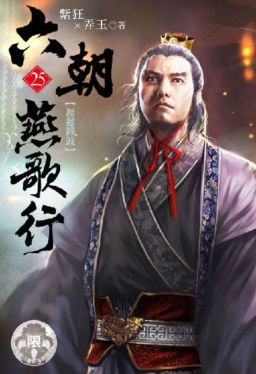

唐国篇
出版日期： 2021年 10月 31日
【本集内容简介】
程宗扬捏造出不拾一世大师的转世灵尊这一身份，意外让许多阴谋浮上台面……
黎锦香和张恽联手演了场戏，让周飞为了前途官位，不惜签下内容不堪入目的誓书，将自己与妻子全都卖给了程宗扬……
各方阵营接连转移目标，程宗扬捏造出自己是不拾一世大师的转世灵尊这一身份，意外地让许多阴谋浮上台面。误打误撞地捅了马蜂窝，程宗扬也只能走一步算一步……
※ ※ ※ ※ ※
长安。大明宫。
丹凤门前，几名黄衫锦带的内侍正围着一名武将，笑脸如花地说着什么。
那武将身姿魁伟，握着缰绳的大手坚如铁石，手腕几乎比那些个内侍的脖子还粗一圈。
但更吸引人目光的，则是旁边一匹金辔玉鞍的高头大马。那匹马骨架健硕，马蹄大如碗口，棕黄的毛发蜷曲犹如麒麟，体表有九处拳头大小的旋纹，马颈犹如虬龙，颈上的鬃毛又浓又长，在风中猎猎飞舞，神骏无比。
几名内侍围着苏定方好说歹说，劝他收下仇公公这片心意。
苏定方推辞半晌，终于却之不恭，只得谢过仇公公，在一片阿谀声中，当场换了坐骑。
苏定方跨上战马，雄壮的身躯与鞍下的烈马相得益彰，果然是人如虎，马如龙，气势非凡。
一众内侍连声喝彩，都道只有这匹御赐的九花虬，才配得苏将军的神武。
对面的翊善坊内，阁楼上一扇窗户开了道缝。
从窗缝远远望着那位威风凛凛的天策大将，郑注脸色说不出的难看。但回过头来，又变得风轻云淡，一派智珠在握的从容。
“两位将军不必心急。”郑注负手说道：“仇士良等人不得人心，今日朝会只来了寥寥数人，时机非宜，因此我将时辰改到了晚间。到时宫中人困马乏，吾等必能一击而中，迎回圣驾！”
两名神策军将领额上冷汗淋漓，脸色像死人一样苍白。
众人约好今日朝会时同时起事，谁知到了约定的时间，魏博乐从训那帮牙兵不见踪影；平卢李师道应诺的伏兵不见踪影；手中握着最大一股兵力的张忠志不见踪影；连那些个惯会钻营的胡商也不见踪影！
昨晚约好的各方势力，最后只有他们两个带来的几十名亲信部曲，即使加上郑注的仆役，也不足百数！
现如今，天策府的将领又亲自出动，驻守宫门，虽然只有五个，但光是姓苏的那粗坯往那儿一杵，千军万马都打不过去！还说什么迎回圣驾？简直是痴心妄想！
两人暗暗对视一眼，心下打定主意，鱼公公不出面，这漟浑水无论如何都趟不起了，三十六计走为上，即便鱼公责罚也顾不得了。
郑注也是满心烦躁，鱼弘志去如黄鹤，音信全无，自家的计划还未发动，就废去大半。乐从训、张忠志纷纷失约，更让他生出绝大的危机感。
“既然如此，末将便先告退，待得傍晚再行前来。”对面的将领抱拳说道。
郑注哪里不知道两人要溜？故示坦然的哈哈一笑，“何必来回辛苦？两位将军便在此处安心歇息！”
说话间，一名家丁快步进来，“宫观主回来了！”
郑注大喜过望，宫万古和齐羽仙说去宫里打探消息，他还担心那两个狗男女一去不回，既然回来，想来会有好消息。
郑注大步迎了出去，朗声笑道：“宫观主！此番深入龙潭，当得其秘……”
宫万古没有揖手施礼，也没有开口，只冷着脸退开一步。
门外传来“嗒嗒”的轻响，一下一下，似乎是铁丸碰触的摩擦声。
“攀守澄，叛守澄；攀圣上，叛圣上。世间之人，无不可为晋身之阶，郑相公，你也算是个人物了。”
大难当前，郑注却不见惊惶，笑意不改地拱手说道：“不意王爷大驾光临，郑某幸何如之？”
李辅国在两名小太监的搀扶下缓步入室。
宫万古大礼参拜，“叩见王爷！”
郑注哪里还不知道，自己是被这厮给卖了，打探消息为假，给李辅国带路才是真的。
虽然恨得牙痒，郑注仍不露声色，笑道：“郡王果然神威无敌，一出面便令群奸束手，望影而遁。想来李训等乱党，已经尽数落入王爷手中了。”
李辅国喟然叹道：“到了这步田地，还在本王面前撇清自己。到底是蠢不可及呢，还是这般看不起咱家呢？”
“王爷言重了。”郑注昂然道：“李训作乱，在下虽然未曾参与，但知晓一二，知情不举，确系有罪。但郑某苦心孤诣，召集忠义之士，冀图举兵勤王，无论如何也不能说有错吧？”
“巧言令色。”李辅国慢吞吞坐到主位上，然后抬起一条腿。
宫万古膝行上前，用肩膀接住王爷的靴子，在他大腿上轻轻捶着。
郑注心直沉下去。宫万古一观之主，又是圣教得力人物，竟然在李辅国面前如此奴颜婢膝，只有一个可能——这厮早已投了李辅国！绝不是临时起意！
想到自己数年来的苦心谋划，竟然都是在李辅国眼皮底下耍的把戏，郑注不由遍体生寒。
以仙姬的无双智谋，岂会不及于此？却是一转手将自己卖了个干净！
李辅国一手转着铁球，半闭着眼睛道：“你这会儿还敢跟咱家饶舌，是以为咱家看在老鱼的面子上，不会杀你……是吧，鱼注？”
郑注心念电转，面上爽朗一笑，拱手道：“自然瞒不过王爷！”说话间，他颈后的衣领已经被冷汗浸透。
“你猜对了。老鱼的面子，咱们还是要给的。毕竟老鱼绝了嗣，只剩你这一个嫡亲的本家侄儿，寄养在泊陵鱼家。若是杀了你，只怕老鱼会跟咱家发疯。”
李辅国叹道：“何况他又献了一个侄女，虽然不大情愿，终究没撕破脸跟我闹。这点人情，也该认。”
郑注长舒了一口气，“多谢王爷宽宏。”
“不过你上蹿下跳，着实费了咱家一番手脚。”李辅国道：“死罪可免，活罪难饶。”
能捡回条命，已经是侥幸，郑注痛快地说道：“请王爷责罚！”
“听说你跟陈王成美私下里交情不错，还给他送了个姬妾，”李辅国笑眯眯道：“没多久就给陈王殿下添了个大胖小子？”
一直控制着表情的郑注终于白了脸。
李辅国笑道：“果然是做大事的人。”
兴宁坊。凉州武馆。
周飞此时的脸色跟他的头巾一样，绿油油的。
自家妻子一口回绝，反而把他给架在半空，找不到台阶来下。
周飞脸色一阵绿一阵青，怔了半晌，他拖着重逾千斤的步子，走到黎锦香身后，然后双腿一屈，重重跪下，哑声道：“夫人……”
“夫君大人，不必再说了！”黎锦香泪流满面，凄声道：“都是妾身的错！我为夫君扬名，才指使的他们。事已至此，妾身宁愿一死，替夫君恕罪！”
“别！”周飞慌忙摆手，乞求道：“千万别犯傻啊！”
黎锦香咬住红唇。
“人在屋檐下，不能不低头。何况……程侯说过，此事除你我三人之外，再不会有任何人知晓！”
周飞脸皮慢慢涨红，但一想到唾手可得的名声，凭空生出一股勇气，坚定地说道：“行大事者不拘小节！还请夫人忍耐。”
黎锦香像是不认识一样看着他，良久才羞愤地说道：“妾身宁愿一死！”
周飞避开她的目光，“慷慨赴死易，忍辱偷生难。这笔账夫人一算便知，你我若是不答应，惹恼了程侯，我固然难逃一死，你也会被卖为奴婢，受尽欺辱。若是答应程侯，你只是失身予程侯一人而已……”
黎锦香凄然道：“夫君，你可是要把妾身的清白，当作晋身之阶吗？”
周飞双手抠着砖缝，腰背像是断了一样勾着，声如蚊蚋地说道：“你我尚未合卺，虽有夫妻之名，却无夫妻之实……”
“我的名声又该如何！”
“只要不被外人知道，夫人名声又有何损？你知我知程侯知，难道程侯会故意宣扬出去吗？何况……”
“何况什么？”
周飞咬牙道：“何况丹霞宗那位柴宗主，我也是听说过的——他那位夫人早就失了贞，如今还不是好端端地当他的宗主？”
黎锦香悲声道：“你是让我学她吗？”
张恽厉咳了一声，似乎对他们夫妻间的争执大不耐烦。
周飞心下发急，索性扔掉脸面，乞求道：“求夫人救我一命！只要你答应程侯，让我做什么都可以！”
见他哀求凄切，黎锦香似乎有了一丝动摇，随即又拼命摇头，流泪道：“妾身既然嫁为周家妇，生当守贞，死当守节。”
“哎哟呵！”张恽不耐烦地说道：“你男人都答应了，你还充什么烈女呢？妇道人家讲的是三从四德，在家从父，出嫁从夫。丈夫就是你的天！世间卖妻典妻的还少了吗？周少主一狠心，把你卖给侯爷又如何？也就是你们夫妻俩都是有头有脸的人物，侯爷才用这种瞒天过海的手段，好保全你们的脸面。”
周飞仿佛捞到救命的稻草，“正是如此！你既然是我妻子，就该听我的！”
黎锦香默然良久，最后凄楚一笑，“嫁鸡随鸡，嫁狗随狗，嫁得乌龟……妾身只能认命。”
周飞大喜过望，“多谢夫人！多谢夫人！”
黎锦香哽咽道：“夫君大人，妾身都是为了你……”
“我知道！我知道！我周飞能有今日，全靠了夫人！此恩此德，周飞没齿难忘！”
张恽阴恻恻道：“还有程侯。”
“是！是！是！多谢程侯宽宏，周飞感激不尽。”
“尊夫人呢？”
黎锦香默默流着泪。周飞连忙道：“在下代内子谢过侯爷。”
“这不就成了！”张恽喜笑颜开，“恭喜少主，恭喜夫人。我家侯爷是惜花之人，自不亏待两位。”
周飞刚得意没几天，便撞上这种生死抉择，一步踏错，便是身败名裂，永劫不复。如今终于力挽狂澜，保住名声，周飞喜不自胜，看到张恽朝他摆手，一时间没有反应过来。
张恽翻了个白眼，“周少主，你先出去吧。”
“啊？”
“咱家是侯府的内侍，得为侯爷负责，这会儿先验验尊夫人的身子，免得有什么难言之隐。”
“哦哦。”周飞明白过来。
“别走远，就在门外候着。”
“是，是。”周飞连声答应，又赶紧道：“侯爷说的翊府郎将……”
张恽不耐烦地说道：“待咱家验过再说。”
周飞退出自家的臣房，小心掩上门，只听那太监淫笑道：“周夫人，把衣裳都脱了吧。”
周飞心头“怦怦”直跳，唯恐自家夫人事到临头又反悔不肯。待听到里面低低了应了声，“是。”才终于松了口气。
算算这笔账，怎么都是值的！
柴永剑那老乌龟，不知戴了多少顶绿帽子，到底不过一芥草莽。哪像自己，翊府郎将！五品官职！大唐的官身！程侯金口许诺！
既然做了英雄，哪里顾得了许多儿女情长？自己这番果决明断，正是第一流的豪杰！
有道是女子如衣服，弟兄如手足，自己的衣服让别人穿穿又能如何？何况自己就没穿过！壮士断腕，莫过于此！
周飞心潮澎湃，豪情满志。只可惜此事不好对外人说，只能埋在心底，孤芳自赏了。
“别担心，他听不到。”
张恽有点不敢相信，“他这可就从了？”
黎锦香微微一笑，“知道我这个周夫人有多下贱了吗？”
张恽连忙道：“不敢，不敢！黎门主的手段，奴才佩服得五体投地！”
“也要多谢公公肯跑一趟。”
张恽连连摆手，“咱家就是个跑腿的。你要谢，还是谢谢娘娘才是。”
黎锦香轻笑道：“那也不用谢了。毕竟往后我们夫妻便都是程侯私下豢养的公狗和母狗，吕娘娘又是半个女主人，何必客气？”
张恽干笑道：“说笑了，说笑了。”
“那几个人留不得，早早除掉便是，对外只用说送往舞都关押。至于我这位夫君大人，早已经被功名利禄迷了心窍。”黎锦香冷冷道：“便是没有程侯，别人招招手，他也会摇着尾巴，将我双手奉上，还不如受程侯庇护。”
“那是！不是我吹自家主子，也就是侯爷，真正把人当人看。我算个什么东西？狗一般的奴才！侯爷都从来没摆过架子，有时急眼了骂两句，那也是把我当成个人。对女人那更是心软得跟豆腐一样，各种护着哄着。”
“那可不成。”黎锦香笑道：“还请公公跟侯爷说清楚，那位周夫人是条最下贱的狗奴，只配让人羞辱，哪里值得侯爷呵哄？”
张恽干笑着抹了把冷汗。
这么如花似玉的小娇娘，燕尔新婚，居然被逼成这个样子，遇人不淑啊。
黎锦香取出一份文契，“一会儿把这份约书，让我们夫妻签了。”
张恽打开一看，倒抽了一口凉气，“这……这也有人肯签？”
“他当然肯。”黎锦香笑道：“他不是说了吗？只要保住他的名声，什么都肯做。”
“这份约书一签，那可是……”
“放心，他已经被侯爷捉到致命的把柄，再多一个又有何妨？”黎锦香淡淡道：“这位大弁韩的周少主，可是深不可测，没人知道他的底限在哪里。”
周飞守在门外，禁不住又患得患失起来。
万一侯爷的近侍验过之后，没看上自家妻子该怎么办？毕竟自己也没沾过妻子的身，会不会有什么难以启齿的隐疾？
若是如此，自己这回可就太背时了。机不可失，失不再来，只盼自家妻子能争气些，让张公公挑不出错来……
随着时间推移，周飞越来越焦虑。忽然“吱哑”一声，房门打开，张恽一手揽着黎锦香的腰肢，笑眯眯出来。
自家妻子满面羞态，眼睛红红的，泪水一滴滴落下。
周飞心下一沉，难道自己的厄运还在继续……
“已经验过了。周夫人元红尚在，下边那只妙物，更是美不可言。”张恽猥琐地在周夫人臀上狠揉了一把，淫笑道：“侯爷必定满意。”
强烈的耻辱感涌上心头，周飞竭力压抑，还是禁不住咧开嘴，马脸上露出一个大大的笑容。
成了！自己妻子这么美貌，肯定能讨程侯欢心！
终究是胸襟开阔，自己向来处事明断，拎得起，放得下，退一步海阔天空。轻而易举便将威胁转化为助力，凭自己的能力，再有程侯在暗中攘助，自己更是如虎添翼！
“把这个签了吧。”张恽递来一份文契。
周飞一头雾水地接过约书，只扫了一眼，便张大了嘴巴。
张恽夹住文契一角，“你若是不肯，那就算了。”
张恽一扯，却没扯动。
周飞咬了咬牙，“我签！”说着将手指放在齿间一噬，龙飞凤舞般在文契上留下姓名、画押和指印，然后递给妻子。
“赶紧画押，别让张公公久等。”
程宗扬两眼瞪得老大，“干！”
张恽道：“上面有周少主和周夫人的亲笔签名和画押，条款都是周夫人事先拟好的。”
“什么东西？”
杨玉环劈手夺过文契，一目十行地扫过，那双美目顿时瞪得比程宗扬还大了一倍，惊呼道：“我肏！”
只见那份文契上方写着三个大字：献妻誓。
下面是周飞自陈，愿将自家妻子献予程侯，恳求程侯开恩收容。为示诚意，愿立契为誓。
第一款：大弁韩周族少主周飞，自愿将结发妻子黎锦香献予主人程侯，今生今世，死而无悔。
第二款：周飞夫妻在程侯面前以犬马自居，主人有命，无不遵从。在外仍示为夫妻，未经主人允许，不得泄露身份。
第三款：自立契之日起，周妻即归主人所有。周飞不得私自亲近妻子。若有违反，甘愿自宫。
第四款：主人对周妻有绝对处置权，可任意使用或伤害周妻的身体。如主人有令，任何人均可使用周妻。周妻必须同意，并有义务使对方满意。
第五款：周妻须主动前往主人处听候吩咐。为避免外界生疑，同在一城时，每三日前往一次。百里内，五日一次。千里内，每月一次。超过千里，每半年一次，每次不少于一个月。
第六款：若主人光顾临幸，周飞有义务承担守护之责，以免主人受到冲撞，不能尽兴享用周妻。
第七款：周飞的一切荣誉和名利，都由主人所赐，为表示对主人的忠诚和尊敬，周飞必须每日赞美主人三次以上。并记录每日所思所想，进献给主人。
第八款：周飞一切荣耀都来自于妻子，为示感激，今后将以妻为尊，视妻为主，敬妻如神，唯妻命是从。每日须赞美妻子一次以上，禀报当日行止，不得遗漏。
第九款：周妻如有孕，听从主人吩咐留养或是下胎，周飞不得阻止。
第十款：周飞夫妻生死荣辱尽付主人，歃血为誓，绝不背叛。
最后是立誓人，周飞夫妻用鲜血留下的签名和画押。
杨玉环惊得目瞪口呆，“这是什么鬼？你给他们下蛊了吗？”
程宗扬示意张恽先退下，然后拿过文契左右端详，啧啧道：“我也没想到，还能这么玩的？”
这誓书不会是广源行的模版，被黎锦香拿来用了吧？
“别装傻！你给我说清楚！是不是给他下蛊了？”
“没什么，就是周飞有个要命的把柄落到我手里了。大家商量好，他当他的英雄，我玩他的老婆。”
“他给你就要？无耻！不要脸！”
“要不我把它撕了？”
“别！”杨玉环把文契抢过来叠好，收到怀里，“我拿回去参考参考，回头让你也给我写一个。”
“行啊，只要紫丫头愿意。你们随便！”
“哎哟，紫妹妹还没过门呢，你就把她敬得跟神一样？”
“不然呢？”
杨玉环鄙夷道：“你会不会哄女人？女人是让你敬的吗？你得拿出你的大棒子，把她给敲服了！”
程宗扬狐疑地说道：“你是在说你自己吧？”
“呸！要敬你也得敬我！”
“把你当成净街神？”
杨玉环得意起来，“我厉害吧？从东城到西城，本公主车驾所至，连一个敢喘气的都没有！”
她拍着胸口道：“要不是本公主面子够大，光靠卫公那点人马，累死他们也忙不过来啊。”
程宗扬盯着她波涛汹涌的胸口，眼都花了。杨妞儿到底吃什么长大的？怎么会这么大？
“咄！”杨玉环屈指在他脑门弹了一记，厉声道：“看什么看！眼珠子都掉出来了！”
程宗扬一手按着额头，仰面寻思道：“好像没有小白的大？”
杨玉环当时就炸了，“你说什么？再说一遍！”
“要不你们俩比比？我给你们当裁判。”
“做梦去吧！”杨玉环啐了一口，转身就走。
“等会儿，你不是说有事吗？”
杨玉环一拍额头，“差点儿忘了。今天的朝会总共也没来几个人，仇士良气得冒烟，一下朝就把卷宗搬过来，一口气全给判了。”
“怎么判的？”
“王涯、李训、舒元舆、李孝本、王璠、罗立言、郭行余等十余人定为乱党头目，先献祭太庙，然后由神策军押解，在东、西两市游街示众，勒令百官前往观看。游完街再献祭太社，最后押到独柳树下，全部腰斩，首级悬挂在城门外示众。族中男丁一律斩首，家眷没为奴婢，充入教坊，或送往各处发卖。其他关押在金吾仗院的涉案官员全部杀头。”
程宗扬呼了口气，“这么狠？”
“听说仇家二公子伤情不大妙，已经昏迷两天了。仇士良对李训等人恨到了骨子里，全杀光都不解气。”
断子绝孙，能不恨吗？这仇恨自己化解不了，也没有立场去化解。
程宗扬甩了甩头，“那棵独柳树，你知道吗？”
“这有什么不知道的？那棵独柳树在太社边不知多少年了，长安处决人犯多在西市，文武官员都在独柳树下。”
看来杨妞儿也不清楚独柳树的异状。也是，除非像自己一样身具生死根，不然谁会想到，那棵在刑场边矗立了无数岁月的独柳树已经成精呢？
程宗扬想了想，“李昂呢？”
杨玉环抿起唇角，过了会儿道：“宫里说，那位圣上受了惊吓，龙体不豫，暂时不能接见大臣。”
“你……知道吧？”
“卫公跟我说过。”
“那他们为何不发丧？”
“多半还没有准备好。”杨玉环冷笑道：“那帮阉奴废立君王，就跟做生意一样，少不了待贾而沽，细细讨价还价一番。”
杨妞儿说的是正常情况，但现在的情况明显不正常。至少李辅国没道理这么匆忙就把李昂杀死。留着他又能如何？李昂已经是众叛亲离，羽翼尽失，几个太监就能把他看得死死的，何必冒着走漏风声的危险，匆忙弑主？
还有李辅国把罗令当成自己有意安排的眼线，让他目睹了弑君的经过。究竟是想传递什么意思？
罗令转述的经过太过血腥骇人，程宗扬想了想，还是没有告诉杨玉环。
“安乐呢？”杨玉环问道。
“咳咳，”程宗扬连咳几声，“送她回家了。”
杨玉环奇道：“那你跑我家里干嘛？你不会专门告诉我，你不行吧？”
“我想问你件事——安乐从小有没有什么异常？”
“什么异常？安乐怎么了？”
“就是……”
程宗扬发现自己很难解释其中的微妙，尤其面对的还是个黄花闺女。虽然这朵黄花已经够污了，可自己跟她谈处女开苞的细节体会，她也没那个经验不是？
“算了。”
“什么叫算了？”杨玉环当时就不乐意了，“故意吊我胃口是吧？”
“姓岳的失踪后，安乐才出生，他们两个肯定没见过，对吧？”
杨玉环闭上眼睛，过了会儿笃定地说道：“他提到过。”
“怎么说的？”
“他说，唐国宗室美貌第一的是安乐公主，不逊于高阳。”
“……他跟高阳公主是怎么回事？”
“高阳是先帝长女，早早就嫁了人。他到长安，不知怎么得到了一只金宝神枕，拿出来炫耀。后来被人认出来，是高阳公主床上之物，事情就闹大了。”
岳鸟人盗走了高阳公主的宝枕，然后被公主府上的高手追杀千里……这些传言肯定是扯淡。八成是高阳故意把高手调走，好让岳鸟人专心打靶。只不过打靶就打靶吧，还拿着靶纸炫耀，不愧是鸟人干的鸟事。
“高阳公主后来失踪了？”
“什么都没有留，人就消失了。这是皇室丑闻，对外只能说身故。”杨玉环道：“当时为了驱邪，还请窥基带领僧众，做了七七四十九天的法事。”
“然后再也没有音讯？”
杨玉环摇了摇头。
“他们两个是先后失踪，还是一起失踪的？”
“我都不知道他是什么时候不见的。高阳倒是能确定时间，但事隔已久，我当时没有留意，要找人问问。”
已经是十七八年前的事了，唐国连皇帝都换了四个，想找到当事人，只怕并不容易。总不能去问窥基吧？
程宗扬不放心地问道：“能找到人吗？”
杨玉环奇怪地看了他一眼，“当然能。安乐那宅子，以前就是高阳的。”
“外头的神策军都换了人，脸生得紧。看情形，像是刚从外郡调回长安的，人数应该不是太多。”高力士小声禀报道。
“这么快就从外头调兵了？”杨玉环颦起娥眉。
由朝廷直接掌控的神策军总计十八万，不可能全部驻守京师，大量军士驻守在周边关塞。这种敏感时期，从外郡调兵也属于正常操作。先看紧十六王宅，更是情理之中。只能说那些掌权的太监动作够快，一点破绽不露。
杨玉环的大长公主府与安乐公主的府邸同在一坊，驾车不过一刻钟，比步行快不了多少。只不过太真公主表示今天跑累了，得有人捶捶腿。于是这个光荣的任务就交给程侯殿下了。
杨玉环打横躺在车厢内，一双大长腿搭在程宗扬身上，拿着那份《献妻誓》来回看着，不时格格发笑。
她摇着文契道：“你以后也要每天赞美我三次。”
程宗扬揉着她圆润弹手的大腿，“没问题。只要你的光屁股舞跳得好，我不光给你点赞，还给你打赏。”
杨玉环啐了一口，问道：“周飞的老婆是剑霄门那个黎门主吧？好像新婚不久？一会儿把她叫来呗。”
“干嘛？”
“让本公主长长见识。看看这位跟丈夫一起立契卖身的新娘子，到底长的什么样。”
“别做梦了。”
程宗扬停了一会儿，还是叮嘱道：“她是个很让人敬佩的女人。这件事是有原因的，你可千万别多嘴往外说。”
“我什么时候多嘴了？本公主嘴巴紧着呢！”杨玉环翻了个身，兴致勃勃地说道：“听起来很有趣呢，给我讲讲！”
等马车停下，程宗扬也只讲了一半，杨玉环拉着他不肯走，非听他讲完才松手。
这位镇国大长公主气得凤目喷火，忿然道：“该死的广源行！该死的商蠹！还有姓周的狗东西！为了点儿虚名，脸都不要了！无耻！混账！不是男人！”
程宗扬有点后悔给她讲这么多，毕竟杨妞儿的脑回路也是奇葩，行为完全不可预测。黎锦香不顾生死，坚持要留在广源行，一旦走漏风声，后果不堪设想。
“我懂。”杨玉环少见地严肃起来，“这样一个置身虎穴，忍辱负重的奇女子，连我都钦敬有加。你放心，我绝不会坏她的事。”
“不过——”杨玉环说着眉梢挑起，怒气槽直接拉满，叱道：“你为什么要让那个该死的老女人去帮她？你是不是看不起我？”
“停！”程宗扬赶紧打断，“这是她们两个自己勾搭上的，跟我没关系。”
“不行！让死女人出局！滚回家孵蛋去！换我来！”
“你别乱来！”
“你不答应是吧？那好！我去找死女人，把她打服！”
杨玉环飞身跃下马车，旋风般冲进小楼，接着楼内便是一阵鸡飞狗跳。
等程宗扬追进去，只见吕雉歪倒在地，脸上已经多了一记掌印。杨玉环一脚踩在她肩上，一手揪着她的头发，叱声道：“服不服！”
程宗扬赶紧分开两女，把吕雉挡在身后，“有话好好说，动什么手呢？”
“死女人！我看到她就火大！”
杨妞儿对吕雉的痛恨简直莫名其妙，就跟前世的宿敌一样，一见面就是你死我活，水火不容。
吕雉又羞又气，她侧身伏在地上，凤钗歪到一边，一手捂着脸颊，玉白的手指都在发颤。
“有你这样欺负人的吗？”程宗扬吼道：“她怎么得罪你了？见面就打？”
杨玉环叉着腰道：“我就是欺负她了，怎么着吧！”
“死女人！有种打回来啊！不然我见你打你一次！”
“你——”程宗扬刚开口，忽然“嗤”的一声，裆下一凉。
程宗扬惊悚地低下头，只见吕雉羞忿地撕开他的下裳，然后毫不犹豫地张开口，当着杨玉环的面含住他的阳物，吞入口中。
杨玉环目瞪口呆，眼睁睁看着那个死女人张开娇艳的红唇，含住男人用来尿尿的秽物，丝毫不嫌弃地舔舐吸吮，来回吞吐，甚至伸出香舌，沿着龟头的冠沟细致地打着转。
髻上的凤钗晃动着，摇摇欲坠。吕雉索性将凤钗扯下来，丢到一边，长发瀑布一样滑下。她仰起脸，以一个屈辱的姿势跪在程宗扬身前，极力张开檀口，将阳物送到喉咙深处。
吕雉眉眼含春，原本让杨玉环一见就火大的高傲荡然无存，优雅的面孔上此时满是诱人的媚态，就像一个卑微的女奴，再没有丝毫的矜持和尊贵。
直到将主人的阳物舔舐得昂然高举，吕雉才吐出阳物，红唇沿着湿淋淋的棒身，一路缱绻柔媚地亲吻到阴囊，香舌轻佻缓舐，不时用唇瓣吸住睾丸，发出淫荡的“啵啵”声。
与此同时，吕雉分衣解带，拉开衣襟，露出如雪的胸乳，然后挺直腰肢，用丰腻的乳肉夹住肉棒，一边揉动，一边娇媚地说道：“主子，鸡巴被奴婢舔得舒服吗？”
程宗扬不知道该说什么好。
吕雉秉政多年，高傲惯了，即使沦为奴婢，也向来以矜贵自持，从不肯在别人面前失了身份。此时当着杨玉环的面，嗲声浪语，尽显淫态，果然是气狠了。
再看杨妞儿，整个人都看傻了。这个荤素不忌的大美女，明显没见过真章。俏脸先是雪白，然后涨得通红，看得嘴巴都忘了合上。
当吕雉将阳物送入喉中，杨玉环喉咙也不由自主地跟着动了一下，情不自禁地咽了口口水。
接着看到吕雉罗裳半褪，挺起雪乳，妖淫娇媚地给主人乳交，杨玉环下巴几乎掉了下来。
等吕雉开口，杨玉环终于回过神来，发出一声中箭般的尖叫，双手掩面，飞也似冲了出去。
吕雉依在主人腿上，放声大笑。
两人斗了多次，吕雉打不过武力爆表的杨妞儿，次次屈居下风，受尽屈辱。这一回终于大获全胜，逼得她落荒而逃，让吕雉总算是扬眉吐气，一雪前耻。
“你真是……”程宗扬摸了摸她脸上的掌痕，“痛吗？”
吕雉笑着娇声道：“好爽哦。”
“适可而止啊。”
“我猜她肯定忍不住气，还会回来。所以……”
吕雉起身褪去衣物，赤条条伏在主人面前，回头娇媚地柔声道：“求主子恩典……”
高力士抱着拂尘，靠在外面廊柱下，耷拉着眼皮，似乎正在打瞌睡。忽然他耳朵一动，赶紧站直，一手挥起拂尘，拂了拂衣袍。
“光”的一声，自家公主撞开门，双手掩面，旋风般冲了出来。
杨玉环面红耳赤，头顶几乎要冒烟一样。接着她猛地一跺脚，在高力士惊诧的目光中，旋身杀了回去。
“光”的一声，杨玉环踹开房门，气势汹汹地卷土重来。
楼内帘幕卷起，姓程的立在帘侧，那个死女人赤条条伏在他身前，放荡地摆动腰臀，在他胯下婉转承欢，一边娇声浪叫，“主子用力，用大鸡巴肏奴婢的屁眼儿……”
不甘落败的杨玉环刚鼓足勇气杀回来，迎面又受了一记暴击，这个黄花大闺女尖叫一声，“我肏！”再次败走。
“求姐姐恩典，用大鸡巴肏穴奴的屁眼儿……啊！”
滟奴失声痛叫，那根剔着沟槽纹饰的漆棒直挺挺插在她白艳的臀肉间，滴着淫液的棒身色如墨碇，上面张牙舞爪的飞龙已经没入肛洞，留在外面的龙尾鳞甲栩栩如生。
房内的淫戏还在继续，惊理抓住她丰腴的白臀一边挺动，一边嘲笑道：“被主子用过还这么紧？”
滟奴吃痛地说道：“是姐姐的棒子太大了。”
惊理冷笑道：“难道比主子的还大？”
“没有……”
“那就把屁股扒开，让姐姐把棒子整个插到你屁眼儿里！”
“啊……”
“啊！”
旁边传来一声尖叫，却是萧氏颤栗着发出哀鸣。
孙寿将她阴蒂的包皮剥开，然后打开案上的玉盒，指尖沾了些细白的粉末，捻住那只红嫩的肉粒，将粉末状的淫药揉在她裸露的阴核上。
随着她的揉捏，那粒娇嫩的阴蒂迅速充血变大，像颗熟透的浆果一样，在她指间不住变形。
萧氏身体像触电一样乱颤，玉容扭曲着，哀声讨饶。
孙寿娇叱道：“骚货！把你的浪屄扒开！”
萧氏颦紧眉头，双手伸到下体，含羞将湿媚的玉户分开。淫穴上方，那颗小巧的花蒂又红又肿，像颗红熟的枸杞子一样向上突起。
成光将两根细竹枝绑在一起，捏住两端，竹枝弯曲着分开，然后指尖一松。
在萧氏的尖叫声中，两节并紧的竹枝像夹子一样，紧紧夹住她膨胀的阴蒂。成光将一根丝带系在竹夹上，娇笑着来回拉扯。
萧氏双手剥开淫穴，被提得一边哀叫，一边不住挺起下体。那只淫艳的肉穴敞露着，红腻的穴口不住翕张，吐出一股又一股淫液。
成光笑唾道：“这骚货水真多。”
孙寿唤道：“嬛儿，把那根羽毛拿过来。”
安乐抿着小嘴，双手将一支洁白的鹅毛托在掌心，乖乖奉上。
孙寿拈起鹅羽，在她下巴上一划，一丝轻微却奇痒无比的触感，钻心般一直痒到心底，使得安乐小脸一白。
孙寿吃吃笑道：“小妹妹，还真是嫩呢……”
孙寿将鹅毛弯成圆环，然后玉指一松，柔软而坚韧的长羽瞬间弹直，顶端的羽丝轻颤不已。
“仔细看着，姐姐怎么用一根羽毛，让你娘这骚货快活到升天。”
安乐眼泪汪汪地小声唤道：“娘……”
萧氏露出笑靥，柔声道：“没事的，两位姐姐只是在跟娘玩耍。她们喜欢玩娘的小穴，娘就陪她们玩一会儿，其实娘也是开心的……啊啊啊……”
萧氏颤声道：“好姐姐，奴婢的小穴里面好痒……”
孙寿将洁白的鹅毛插进美妇红艳欲滴的穴口，一边捻动，一边来回戳弄，娇笑道：“瞧，你娘的浪穴又流水了。”
成光笑道：“这骚货最喜欢捅屄眼了，一捅就喷水。”
萧氏被那根鹅羽拨弄得魂飞魄散，一边双手扒着蜜穴，让羽毛进得更深，一边颤声道：“好姐姐……奴婢……奴婢要浪出来了……啊……”
安乐小脸越来越红，情不自禁地夹紧双腿。
“呯”的一声，杨氏被推了过来，一头撞到萧氏怀中，两女齐声哀叫起来。
“贱货！”惊理啐道：“你们婆媳俩，好好来亲一个。”
两女互相看了一眼，然后张开红唇，唇齿相接地亲吻起来。
程宗扬看着这淫靡的一幕，心下嘿然。
自家内宅这些奴婢没一个善茬，如今捡到一个软柿子，还不是尽情欺负？而且萧氏这柿子也实在太软，对谁都是一味讨好。似乎在她心里，恐惧和不安全感已经到了极点，只要能讨好别人，什么都肯做。不知道她经历了什么，使她怯懦像是融入血脉一样，不敢拒绝和反抗，甚至无底线地迎合凌辱者的恶趣味，似乎在她的潜意识中，自己只有卑微得让凌辱者开心，才能获得一丝虚幻的安全感。
杨氏倒不是萧氏那种任人欺凌，还甘之如饴的性子，只不过一个被拿来抵账的新人，又赶上内宅迭遭变故，众女存了一肚子的怨怒，这会儿拿她撒气，她根本反抗不了，说来只能算是倒霉。
自己虽然心软，但拦着不让奴婢们发泄怨气，也不好说出口。毕竟有个先来后到，阻止旧人，又何尝不是对她们不公平？自家的奴婢服侍这么久，没有功劳也有苦劳，新人又有什么？
说到底，萧氏和杨氏本来就是李昂得罪了自己才被送来赎罪的，留下她们性命已经不错了，还想要什么体面？而且这些贱婢没拿安乐戏耍，说明她们心里还是有分寸的，不至于搞出什么太过分的场面，无非是戏弄而已。
“瞧见了吗？”程宗扬道：“里面那对婆媳，比你们的关系可融洽多了。”
吕雉面如桃花，风情万种地瞥了他一眼，“那个又不是我生的。”
程宗扬在她臀上捏了一记，“把杨妞儿给气跑了，这下高兴了吧？”
吕雉含嗔道：“下次她再敢来找茬，我就真做，气死她！”
程宗扬很想说，如果来真的，万一杨妞儿被气过头，来个破罐子破摔，当场动手，到时候你可要吃大亏的。不过吕处女难得在杨妞儿面前占回上风，也不去扫她的兴头了。
“去把安乐叫出来。”
“干嘛？”
“有你这样当奴婢的吗？”程宗扬奇道：“主子干点儿事还得跟你汇报？”
吕雉白了一眼，进去唤道：“嬛奴，过来。”
叫来安乐，倒是为了正事。自己本来和杨玉环一起来寻找高阳的线索，结果杨妞儿立威不成，反而连遭两次暴击，丢盔弃甲，狼狈而逃。这会儿跑得连人影都找不着，看来她也就是口上花花，脸皮比自己想像的要薄得多。
“高阳姑姑？”安乐道：“我都没见过她，只听母亲提起过。”
“你这里是高阳的旧宅，有没有奴仆是服侍过高阳公主的？”
“没有吧。”安乐小声道：“府里的下人都换过的。”
程宗扬仔细问了一番，原来安乐一直随萧氏在宫里居住，李昂登基之后，才赐第别居。这位宅院此前空了十几年，仆役早已四散，想一个一个找到，不知要花多少工夫，还不一定有线索。
程宗扬只好将此事放到一边，回头问问萧氏，说不定她知道的还多些。
安乐乌亮的眼睛怯生生看着他，像受惊的小兔子一样，可爱中还有一丝孩童般的稚气。
唐国宗室多的是俊男美女，安乐能被称为最美貌的公主，姿色自是不凡。此时的她正值豆蔻年华，更显得香娇玉嫩，姣美无瑕。
程宗扬心头微动，想起昨晚的困惑，吩咐道：“过来，坐到这里。”说着指了指胸口。
“啊……”安乐愕然张开红唇。
“唔！”安乐低叫一声，被他一把抱到榻上。
房内一只铜鹤引颈向天，长喙袅袅吐出香雾，榻上朱红的纱帐低垂下来，纱帐一角绣着一群吃草嬉戏的小白兔，童趣盎然。
程宗扬将几只绣枕放在背后，靠在公主的香榻上，双眼炯炯有神地盯着面前的少女。
少女羞赧地咬住唇瓣，光洁的双膝并在一起，小腿分开，跪骑在他结实的胸膛上。
“脱。”
安乐纤手挽住衣带，粉嫩的娇靥越来越红。
“不是吧？”程宗扬挑起她的下巴，“都被主人收用过了，还这么害羞？看看你娘亲，说来也是金尊玉贵的身份，一旦入了内宅为奴，还不是俯首帖耳，千依百顺？为了讨好几个婢女，自己剥着淫穴，让婢女们玩耍取乐。你是不是也想让她们调教一番？”
安乐小声道：“我不要……”
“赶紧脱！”
安乐吸了吸鼻子，珠泪盈然地解开衣带，一件一件脱去衣物。
绛红色的织锦宫装、粉色的绣裙、洁白的雪纺小衣、藕色的抹胸……在少女手中逐一掉落，直到那具娇美的玉体剥得一丝不挂。
安乐双手交叉，掩住胸前那对白嫩的鸽乳，她面带红晕，明媚的双目微微眯起，眼波中流露出一丝乞求，那只小巧的樱唇又红又润，鲜嫩得令人垂涎。紧并的大腿贴在主人胸口，肌肤略带凉意，能清楚到感受主人沉稳有力的心跳。
从自己的角度望去，那具白嫩的娇躯一览无余，千般娇媚，尽收眼底。并在一起的双腿白美柔润，肌肤犹如脂玉般晶莹粉嫩。
程宗扬心头一阵荡漾，这丫头实在太嫩了，就像还未绽开便令人惊艳的花苞一样，清香四溢。尤其是那双贴在自己肋下的嫩足，宛如白玉雕成般纤美玲珑，凝霜赛雪，足跟和脚底微微透出几抹红晕，秀美绝伦。
程宗扬禁不住张开手，握住她一只香软的玉足。
小巧的脚掌正好被自己一手握住，那种细腻而软润的触感令人销魂，伴随着淡淡的少女幽香，让人血脉贲张。
程宗扬左右看了看，确定门闩插紧，周遭无人，然后抬起手，将她的玉足贴在脸上。
安乐咬住唇瓣，雪白的纤足颤抖了一下，像被他口鼻呼出的热气烫到一般。
“很漂亮啊。”
程宗扬笑着说了一句，将她白嫩的脚掌放在颌下，轻轻摩擦。
少女的纤足软腻得柔若无骨，玉趾宛如花瓣。安乐颦起眉头，小声轻叫着，却是被他冒出的胡茬刺到，玉趾不时勾起绷紧。
安乐心如鹿撞，粉颊绯红，主人的手掌滚热发烫，赤裸的脚掌被他握住，彷佛要被烫化一样，有种异样的酸软，软绵绵的使不上力气。
程宗扬在她脚背上飞快地亲了一口，放开她的嫩足，吩咐道：“把腿张开，让我看看你的小妹妹。”
安乐羞得耳根都红透了，最后还是乖乖分开双腿，露出那只娇嫩的美穴。
她下体光洁滑腻，两片娇嫩的蜜唇软软合在一起，露出一条白嫩的肉缝，只是此时下体亮晶晶的，淌满了淫水。双腿张开，一股清亮的淫液从穴缝中淌落，流到主人胸口。
程宗扬指尖沾了点淫液，递到安乐面前，笑道：“居然湿成这样了？是不是看到你娘被人玩小穴，你也忍不住了？”
安乐羞窘地说道：“不……不是的……”
“你娘看起来很开心嘛，自己挺着浪穴，让人随便玩……再近一点儿，”程宗扬道：“自己把小妹妹剥开。”
安乐侧过脸，双手伸到股间，将嫩穴剥开。
一片诱人的红腻从肉缝间绽出，色泽鲜嫩温润。饱含着蜜汁的嫩穴泛起湿淋淋的光泽，在洁白的玉股间娇艳欲滴。
“啊！”她痛叫一声，却是主人伸出一根手指，放在她柔嫩的穴口，然后探入蜜腔。
少女的蜜穴又湿又嫩，刚伸入一个指节，便触摸到昨晚开苞的痕迹。那层处女膜已经彻底撕裂，但蜜腔的肉壁上还有些许细微的残留。
以程宗扬此时的修为，静下心来仔细探触，轻易便分辨出她蜜腔内受创的残痕，甚至能在脑海中勾勒出它原本的形态：状如月牙，紧贴在蜜腔一侧。
作为唐国最美貌的公主，安乐的元红竟然没有采补的效果，让程宗扬大惑不解。
理论上讲，男女相契，阴阳交合，任何女子都可以双修，只不过寻常女子几乎没有当作鼎炉的价值。就和袁天罡那倒霉蛋一样，再好的功法给他也是白搭，资质太差，最基本的筑基一关都过不去，但真要去练，多少也会有点效果，只是投入与收获不成比例，划不着。
无法双修的情形自己只在狐族身上见过，但安乐显然不是狐族——自己昨天在她身上留了分寸，在萧氏身上可没有。
那位太后撅着屁股，被自己干到阴精狂泄，淫穴虽然不是顶端的上品，仍然有双修的功效。要知道，萧氏并没有修炼过什么功法，只不过有作为鼎炉的资质而已。
但偏偏就是安乐这样一个被视为掌上明珠的小公主，明明破体落红，却是一无所获。自己真气消耗一空，本来满怀期待的给她开苞，结果只开了个寂寞。
当然，安乐这样嫩得滴水的小美女，干起来还是很爽的，尤其是插在她未经人事的处女嫩穴里，看着这个金枝玉叶的小公主在自己身下婉转娇啼，那种快感无与伦比。
唯独采补不成，就像千娇百媚的鲜花少了香味，未免令人遗憾。
手指被湿腻的蜜腔包裹着，越进越深。随着他的触探，滑嫩多汁的蜜肉如水般在指上摩擦着，少女鼻息渐渐急促起来。
程宗扬微微一笑，手指打了个转。
安乐“嘤咛”一声，玉齿咬着红唇，粉颈侧到一边，任由主人在自己羞处探幽寻芳。
昨晚新红初破，她不仅被主人夺走了处子的贞洁，还被主人将精液尽情射进小穴。安乐对男女之事尚是懵懂，更不知道正是主人将精液射进她体内，才使她刚开过苞的小穴恢复大半。如今穴中只有些许红肿，并无大碍。否则刚才被主人触及落红的部位，少不得又是一番痛楚。
安乐娇躯后仰，靠在主人曲起的双膝上，雪白的纤足踩在主人肩头，那只娇美的嫩穴敞露在主人眼前，红嫩的穴口被主人的手指插入，不时滴下蜜汁。
“不要……”安乐小声央求道。
“不要什么？”
“不要再插那里，好痛……”
“都已经开过苞了，还有什么好痛的？”程宗扬道：“看你娘多乖，被我插得快晕过去，还乖乖扒着屁股，让主人肏她的浪穴。还有你嫂嫂……”
安乐鼻尖发红，眼泪汪汪的，又像是要哭了。
“手呢？扒住你的小嫩屄。听到没有？”
安乐带着哭腔小声道：“好……”
少女纤美的玉指剥开嫩穴，露出娇腻的蜜肉。程宗扬手指插在她小巧柔嫩的蜜穴内，笑道：“主人在玩什么？”
“安……安乐的小嫩屄……”
程宗扬笑道：“是你的屄洞。”
“嗯。”小丫头面红过耳。
“这么害羞？把手伸过来。”程宗扬拿起她的手指，放在她的嫩穴上缘。
“摸到那颗小豆豆了吗？”
“啊……”
“这是阴蒂，摸起来是不是有种很舒服的感觉？”
“女孩子刚开始可能有些不习惯，摸着摸着就知道有多好玩了。”程宗扬放开手，“自己捏。”
“啊……啊……”
安乐低叫着，一边捻弄花蒂，一边被他插在穴内摸弄。
“咦？”忽然程宗扬讶然一声，眉头皱起。
在少女穴内紧挨着落红的位置，赫然又有一处异样。那处痕迹细微得几乎无法分辨，又离处女膜破损处太近，如果不是安乐的小穴太过鲜嫩，只怕自己也会忽略过去。
程宗扬手指慢慢转着圈，表情越来越怪异。那处痕迹竟然是环状的，在蜜腔中形成一个完整的圆形。
而她体内分明没有进入过的痕迹，自己才是第一个享用她的男人。
程宗扬长吸一口气，压下绮念，轻轻一拂，让安乐昏睡过去。
宣平坊内，避难的百姓已经散去许多，但还有些淹留不去。其中有些和龙华尼寺的女尼一样，家园被毁，无处容身；有些担心天策府诸将一去，祸乱再起，暂时观望风色；有些是在坊中有亲朋，投亲靠友而来，不急于返回；还有些干脆是被教坊的歌舞吸引，想多待几天。
相比以往，坊中人气旺了许多，连生意清淡的升平客栈都住满了人，掌柜乐得见牙不见眼，觉得都是徐仙长给自家带来的好运。
唐国官府自顾不暇，也无人去请徐仙长等人返回鸿胪寺安住，徐君房乐得如此，索性带着护卫在客栈待了下来。
程宗扬回到住处，却得知贾文和一早就乘车出门，带着敖润和任宏一道，去观望城中气象。
驻守宣平坊的武将是程宗扬不太熟悉的李晟，他铁甲外披着锦服，头盔外面还戴着一顶彩帽，看起来颇为喜庆。也正是因此，他比其余诸将少了几分肃杀，多了几分和颜悦色。换作盗贼出没的其他各坊，也许缺少足够的震慑力，但在宣平坊，倒是相得益彰。
高智商一大早就带着小弟吕奉先，跑去就给这位很可能以后是自己教官的将领献殷勤，叔前叔后地大拍马屁。李晟笑眯眯听着，温言勉励几句，便让他们去坊里帮忙。
高智商也不含糊，立马找到石超和独孤郎，表示无论如何也要为百姓们出把力。两人被他缠得头大，只好让他自己挑。于是高智商便带着吕奉先一头扎进教坊，据说跟教坊的姑娘们打得火热。
城中动乱方起，囊瓦就带着昭南武士赶回去保护申服君，倒是童贯，干脆就在程宅落脚，跟中行说、张恽这两位同行相处甚欢。
程宗扬心里存着事，本来去找杨玉环探问，但杨妞儿刚被吕雉气跑，自己再去露脸，只怕她以为自己是来炫耀的，一个弄不好，说不定又闯进安乐府上，跟吕处女火拼。程宗扬左右思量，索性赶回宣平坊，处理家事，也好让杨妞儿冷静一会儿。
吴三桂留在宅中坐镇，见主公回来，便上前禀报。程宗扬听了一遍，处处妥当，无论拿主意的贾文和，还是下面办事的中行说等人，都是人精，行事周全，根本不需要自己插手。
他摸了摸下巴，“舞都那边有消息吗？”
吴三桂道：“没有。”
算算时间，阮香琳早该回到舞都，速度快的话，应该已经有消息传来，也不知道是不是途中耽搁了。
再想到失去音讯的蛇奴、罂奴，程宗扬心头愈发烦躁。
他定了定神，“我去隔壁看看，有消息立刻来报。”
“是。”吴三桂应了一声。
内宅破损之后，赵氏姊妹便借住在石超家里，两女按照燕仙师当日的吩咐，每日里按时运动，闲暇时绣些婴儿物品，偶尔琴歌自娱，剩下便是安心养胎。
两日不见，赵飞燕似乎又显得纤弱了些，不过眉眼间洋溢浓浓的喜悦，心情明媚。
赵合德悄悄告状，“姐姐这两日只用了些清粥，旁的菜肴，无论荤素，闻见味道便作呕。昨日厨子炖了道蛋羹，刚在外间掀开食盖，隔了几道帘幕，姐姐就吐得昏天暗地。”
程宗扬听得心疼，赵飞燕弃了皇后的尊位，义无反顾地跟了自己。一个千娇百媚的绝代佳人，对自己百依百顺，不仅姊妹同榻成欢，还听自己的话，和她那个不对付的婆婆并乳齐臀，供自己淫乐。甚至还被自己搞大肚子，成了第一个怀上自己骨血的内眷。
将这样的绝顶美人收入宅中，在她国色天香的娇躯上为所欲为，自己倒是爽了，可赵飞燕刚怀孕就吃上苦头，如今孕吐这么强烈，自己也没能陪在她身边，尽到丈夫的责任，而女人怀孕的辛苦又何止于此呢？
怀胎九月，一朝分娩，在这个时代，初胎就如同女人的鬼门关，九个月间，不知要经历多少艰辛磨难。内宅的姬妾们没有动静时，自己总盼着能一展男人的雄风，真到了飞燕怀孕在身，自己又替她担心起来。
程宗扬只好安慰合德，燕仙师炼了些滋补的蜜丸，想来会有些好处。
赵飞燕胃口不开，精神倒还好，她不擅文字，却用粉饼在素绢上绘了几幅持花仕女图，衣带飘举，舞姿翩跹。
程宗扬笑道：“娘子竟然还有这一手？粉饼画的不好保存，回头我让人给你备些丹青水墨，多画上几幅，将来让孩儿看看他娘亲的墨宝。”
赵飞燕有些不好意思地说道：“这些还是妾身以前刺绣时描花样时学的，小环她们昨日来，问起执花舞，我如今有了身子，有些难的不好跳，便画下来给她们看。”
程宗扬倒不歧视教坊女子，反而有人与飞燕说说话，多些交际总不是坏事。
“不用着急，慢慢讲，慢慢画，可千万别累着。”
赵飞燕笑道：“妾身知道了。”
赵飞燕身子要紧，程宗扬别无杂念，抱着她说了些家长里短的闲话，谈了谈设立舞院、画院的构想，心情渐渐放松，竟然不知不觉睡着了。
一梦黑甜，醒来时已经是暮色苍茫，程宗扬与姊妹俩同居一席，其乐融融地用了晚膳，直到张恽进来禀告才离开。
张恽低声道：“周夫人来给主子请安了。”
程宗扬讶道道：“还来真的？”
“周夫人说，立了誓约便是真的。还让小的转告主子，切勿当成做戏——这回连周少主也一并来了。”
“他来干嘛？”程宗扬想起周飞那张马脸，心里就说不出的腻歪。以前烦他是烦他装逼，现在只剩下鄙夷。
“周夫人说，这是第一次，最好夫妻俩一起登门认主。免得他事后自顾自地寻思，觉得吃亏，心下反悔。”
这是逼着周飞亲手献妻，坐实了乌龟，亲手给他自己戴上绿帽？
但是让一个堂堂七尺男儿当面献妻求荣，这事就算周飞不觉得羞耻，自己都觉得尴尬。
程宗扬犹豫起来，“这样见面……太难堪了吧？”
“周夫人说，此事关系到她的生死，请主子无论如何帮她一回。”
程宗扬面露苦笑，黎锦香对周飞的了解有多深，自己不好说，但对自己的了解绝对到位。这话一说，自己硬着头皮也得配合她演一遭。
程宅内，周飞与黎锦香已经枯等多时。夫妻俩都乔装打扮，遮掩面容，还绕了一番远路，以避免暴露身份。
好不容易到了地方，侯爷那位近侍却把他们丢在一间狭小的耳室内，连灯都没点。
夫妻俩同居一室，却不交一言，周飞暗自庆幸，眼前的黑暗反而成了最好的遮羞布，掩住了彼此的尴尬。
不知等了多久，有人敲了敲门，丢下一句话，“来。”
听到那个不男不女的公鸭嗓，像唤狗一样毫不客气的召唤声，周飞心头像是被人狠狠捏了一把，热血涌上两耳。
能屈能伸，方为大丈夫，暂忍一时之辱，他日必有所报！
周飞毅然起身，昂然迈出门去。
穿过侧廊，便踏入程府的内宅。尚未修复的主楼被撕开一道巨大的裂口，夜色下形态狰狞。两侧的走廊和厢房仍保持完整，只是灯火全无，似乎空荡荡的，无人居住。
一身黑衣的张恽大摇大摆走在前面，除了那个“来”字，便再无一言。
心头的忐忑使周飞情不自禁地握紧双拳，额上隐隐沁出汗水。新婚不久的妻子跟在后面，一手捏着斗篷的领子，掩住两腮，低着头亦步亦趋。
主楼前立着一个黑影，忠犬般守在阶上。
张恽快走两步，垂手道：“中总管，人带来了。”
周飞上前，不卑不亢地拱了拱手。
那位内宅大总管，嘴炮之王，程宅所有隐秘的知情者中行大人，用一种睥睨的姿态，居高临下望着两人。
从下望去，只能看到大人的两个鼻孔。
“我还当是谁呢，原来是你小子。”
中总管不阴不阳的口气使得周飞心下暗凛，仔细一看，那两个鼻孔颇有些眼熟，正是那日在留仙镇遇狐时，撞上的那个冷面鬼！
想起那个妖娆的狐仙，周飞只觉一股热流直入胯下……大事当前，自己居然尿意大急！若是被他揭破自己当日的行止，侯爷该怎么看自己？
幸好那位中总管没有多说，只用鼻孔哼一声，然后指了指他肩后。
周飞省悟过来，赶紧摘下背后带套的长枪，放在一边。
“剑。”他提醒妻子解下佩剑，一并放在外面。
向来聒噪的中行说这回惜字如金，似乎懒得跟他这等身份的下人言语，只举手做了个揭下的手势。
周飞赶紧揭下蒙面巾，收到怀里。后面的妻子也取下面纱，露出秀美而温婉的面孔。
中行说又做了个手势，周飞却看不懂了。
中行说不耐烦地翻了个白眼，周飞心下更是着慌。
懵懂间，张恽提点道：“外衣都脱掉！万一你们身上藏了什么违禁物呢？侯爷万金之躯，可马虎不得。”
小不忍则乱大谋！
周飞一咬牙，解下斗篷，脱去外衣，只留下贴身的衣物。再看妻子，却捏着斗篷不肯动作。
周飞低声道：“这是侯府的规矩，防备刺客。我们心里没鬼，又怕什么？”
黎锦香低着头，慢慢除去斗篷、外衣。
“等着。”
中行说丢下一句话，入内禀报。
等了一刻钟，只剩下单衣的周飞里外冰凉，门帘才再次掀开。
“进来吧。”
踏入楼内，便闻到一股异香。那香气幽淡轻逸，沁人心脾。
“侯爷日理万机，听说你们来，特意于百忙之中拨冗，接见你们。”中行说道：“进去不要多说，问你再答话。”
“知道了。”
周飞想起当初在太泉的时节，不过数月，却恍如隔世。谁能想到他会是个侯爷，而且还是封疆裂土的一方诸侯？早知如此……
“侯爷，人到了。”中行说禀报完，停了一下，然后拉开门。
一片明亮却不刺眼的光芒从门内泻出，周飞眼缝飞快地合了几下，才适应了房内的光线。
房间内陈设华丽，光是案上放的一盆鲜花便价值万金。那鲜花宝光四射，却是翠玉为叶，象牙为茎，用玛瑙和红宝石雕刻出牡丹硕大的花朵，中间的花蕊用金丝拼攒而成，栩栩如生，富丽堂皇。
案上放着笔墨，后面空无一人，只有一张铺着锦垫的座榻和一扇巨大的紫檀屏风。
周飞飞快地瞥了一眼，只见屋顶悬着一颗光华四射的夜明珠，径愈数寸，大如儿拳，明亮的光芒将室中映得如同白昼。
这就是王侯的荣华富贵吗？
周飞心旌摇曳，随即暗暗握拳，身外之物而已，富贵于我如浮云！
张恽跟着进来，他招了招手，低声示意道：“跪下。”
周飞虎目生寒，我周飞，只跪天地！
英雄亦有虎落平阳之时，权且忍一时之辱！
周飞推金山，倒玉柱，屈膝跪倒。腹下的尿意又强烈了几分，他不由得夹紧大腿，死死忍住。
中行说对着屏风躬身道：“主子，周氏夫妻到了。”
屏风后隐隐传来笑语声，接着被推开半边，一个身影走了出来。
中行说与后面的张恽大礼参拜，齐声道：“奴才叩见主子。”
周飞随之俯身，暗中瞥了一眼，只见屏风后面居然是一张床榻，一个美艳的妇人玉体半露，伏在榻上，金色的长发瀑布般垂下，掩住雪白的香肩，在灯光下熠熠生辉，那双碧绿的眸子犹如湖水，洋溢着浓浓的喜悦和眷慕。
屏风掩上，阻断了视线。周飞心下暗道，却是一名绝美的胡姬，单论容貌，丝毫不逊于自家妻子，风情犹有过之。
只惊鸿一瞥，周飞便将额头贴在地上，不敢再看。
那位程侯敞襟披着一件玄黑的长衣，衣襟用金线绣着云纹龙饰，随意中流露出泰然自若的贵气。
他坐在书案后，饶有兴致地打量着只穿着单衣的周飞。
失去小罐子的周飞依然维持着骄傲的外表，但底气全无，光鲜的外表下，内里早已朽弱不堪。
正如同用惯外挂的玩家，无不成为外挂的囚徒一样，一旦失去外挂，连正常玩家的水准都不如。周飞的自信和自负全都建立在小罐子的老爷爷之上，失去小罐子，对他的自大无疑是毁灭性打击。
他现在跪在这里，就是最好的证明。为了名声和地位，他可以放弃一切，只要能撑起外表虚幻的荣光，连尊严和底限都可以拿来做交易。
在他眼中，外人的欢呼和赞美声不仅比妻子贞洁更重要，甚至超过他的尊严和生命，为此可以不惜一切代价。
尤其是在这一切唾手可得，却随时可能成为夺命枷锁的时刻，做出这样的选择并不奇怪。
看他俯首贴地，撅着屁股，乞讨着主人的宽恕和恩赐的模样，就像一条被打断脊梁的狗，只少了条可以摇摆的尾巴……
程宗扬心下苦笑，自己果然是滥好人。这种踩在别人头顶拉屎拉尿，予取予求的风光时刻，自己感受到的不是得意，而是一丝同情。
周飞固然是靠外挂支撑着他的自信，自己又何尝不是？短短两年间，自己从纯粹的菜鸟一路突破到六级，难道靠的是自己天赋异禀，毅力过人？当然不是，自己所倚仗的同样是外挂：生死根。
观海用尸傀封住自己的生死根，已经给自己敲响警钟，就像周飞一样，自己的倚仗也可能有一天会失去，而自己又做了什么呢？仔细数数，自己真正下力气勤修苦练的日子，唯有孟非卿孟老大强迫式督促自己那段时间，算是给自己狠狠打下了基础，其他时候差不多都是靠着生死根一路躺过来的。
假如有一天，彻底失去生死根的辅助，自己还有机会精进吗？
要知道，生死根被尸傀封印，正常的吐纳调息可不受影响。别人真气耗尽，都是靠打坐运功来回复，自己呢？连这种基本功都懒得练，全靠着鼎炉够多，一路双修打混。光凭自己的意志力苦修，怕是连维持境界都难。
他看着脚下的周飞，暗暗道：如果失去生死根，自己会不会也和他一样，信心崩溃，尊严扫地，甚至为了名利摇尾乞怜？
程宗扬心下暗暗摇头。
死也不会！宁死不屈！
如果没有自己，这个来自大弁韩的周族少主，命运的垂青者，也许会有不同的人生，也许会成为另一个故事中的主角，风光无限……个屁。
自从被广源行盯上，而周飞没有断然拒绝开始，他的命运就已经注定。只会像一匹供人驱使的牲畜那样，被广源行套上笼头，系于槽枥之间，榨尽最后一点价值。总有一天，他会和现在一样，向行里的掌柜和执事亲手献上他的妻子。
以黎锦香的聪明和坚忍，不会没有设想过与周飞联手，摆脱广源行的束缚。而她最终做出这样的选择，显然对周飞彻底失望，找不到一丝逃脱的可能。
他遇到自己，也许并非不幸，而是另一种幸运。至少自己不会把他的妻子当成吃剩的点心，随意丢给手下。也不会像驭使牛马一样，把他的血汗、尊严一点一点剥夺干净。
膀胱的尿意越来越强烈，周飞咬得牙根发酸，才勉强忍住。良久，头顶传来一句话，“听说你们还没有合卺？”
周飞来之前，不止一次在脑中构想过，自己如何在侯爷面前锋芒毕露，技惊四座，最后如何脱颖而出，使得侯爷对自己刮目相看。但现在，他只盼着这一切赶紧结束，好去一泄为快。
周飞头俯得更低了，他握紧拳头，按照张恽教的话语说道：“劣奴尚未与妻子圆房。张公公已经验过拙荆，并未失贞。”
“是吗？”
张恽道：“回主子，奴才已经查问过，周氏夫妻虽然成婚，但未曾同床。立契前奴才奉命检验过周夫人的身子，其体白皙光洁，无恶疾隐患，可供入侍。”
程宗扬笑道：“周少主做得不错，本侯很满意。”
周飞咬紧牙关，然后沉声道：“多谢侯爷恩典。”
程宗扬走到两人面前，低头看着这对夫妻，“你们夫妻立下契约，愿为本侯奴婢，可是真的？”
“千真万确！”
“立契之后，你新婚的妻子便归本侯所有，未经本侯允许，你连碰都不能碰她，你愿意吗？”
“心甘情愿！”
“以后你这貌美如花的娇妻成了本侯的禁脔，只能与本侯行夫妻之事，甚至被本侯媟戏玩弄，你会不会后悔？”
“死而无悔！”
“好！”
“果然是英雄豪气！”程宗扬抚掌赞叹道：“妻子如衣服，兄弟如手足！行大事者不拘小节！英雄者，志高天下，心胸宽广如海！”
程宗扬竖起大拇指，钦佩地说道：“周少主英雄气概，本侯自愧不如！”
几乎决堤的尿意忽然一松，周飞只觉一股热血涌上心头，周身血液如沸。
英雄所见略同！
连程侯都敬佩我！
果然！我才是真英雄！
“本侯见遍天下英雄人物，可略加试探，便原形毕露。”程宗扬握住右拳，重重击在左手掌心，感慨道：“唯独周少主，豪杰本色，能忍人所不忍！顺利通过本侯测试，果真英雄了得！”
周飞激动得浑身发颤，头顶升起一圈白雾。
是的，这是程侯的测试！他在试探我是不是真英雄！而我略试锋芒，便令他心折！
周飞嘶哑着嗓子道：“侯爷尽管测试劣奴吧！”
“放心，我今后会多多试探你。不知周少主会不会害怕？”
“劣奴无惧！”
“周少主如此豪勇，世间莫比！”程宗扬语带鼓励地说道：“既然如此，本侯再试试周少主，从今往后，本侯会不遗余力地为你造势，助你成为名震天下的英雄，举世敬仰，英名远扬。代价是你的忠心和服从。你可愿意？”
名震天下，举世敬仰，英名远扬……
“愿意！”
“我说的服从是彻底的服从，你要在本侯面前放弃尊严，甚至人格，你也愿意？”
这也是测试吗？肯定的！
周飞慨然道：“这是劣奴的本分！”
程宗扬笑道：“以后就要叫主人了。”
“是，主人！”
张恽咯咯笑道：“主子都已经恩准了，你们夫妻赶紧施礼认主吧。”
“劣奴周飞！携妻子黎锦香，拜见主人！”
张恽唱道：“一叩首。”
“愿主人福祚永享，万寿无疆！”
“二叩首。”
“愿主人龙体康健，无往不利！”
“三叩首。”
“劣奴夫妻愿生生世世效忠主人，永不背叛！”
“少夫人，你呢？”
黎锦香轻声道：“愿意。”
程宗扬勾了勾手指。
见妻子迟疑着不肯动身，周飞心底顿时一急。
幸好妻子没有犹豫太久，终于低下头，手足并用地爬在主人脚边，只剩下小衣的娇躯曲线毕露，那只圆润的美臀一摇一摆，艳态横生。
程宗扬倚着扶手，斜坐在榻中，一手摸着黎锦香的粉颊，笑道：“给本侯为奴，你可觉得委屈？”
黎锦香轻声道：“夫君有命，妾身自当遵从。既然夫君大人已然应允，奴婢哪里有什么委屈？”
“你身为奴婢，把你的第一次献给本侯，你可愿意？”
“奴婢愿意。”
程宗扬大笑着抚住黎锦香的娇躯。少妇含羞伏下身，像听话的母狗一样举起屁股，任主人玩弄。
“好个温柔贤惠的少夫人！”程宗扬赞道：“周少主好福气。”
周飞讪讪地笑了一声。
“还不赶快退下？”中行说阴恻恻道：“主子要肏你老婆了。”
房门关上，程宗扬松开手，摇头道：“何必呢？”
黎锦香伏在他膝上，轻笑道：“主子不知道周飞这种人。他最擅长的不是狂妄自大，也不是深入骨髓的自卑，而是自我安慰，自我陶醉。如果没有今天这一场，只让他签下文契，你猜他以后会怎么想？”
程宗扬摸着下巴道：“怎么想？”
“如果他不在场，将来他会欺骗自己，认为是我背叛了他，把所有的过错都推在我身上。然后幻想自己是一个为了大业，不惜忍辱负重的悲情英雄，不停地自我欺骗，自我麻醉。而在他空想出来的幻境中，我和你都会是坏人，是用来衬托他光明伟岸的道具。”
“只有让他亲身经历这一切，将这一切刻在他的记忆里，才不会被虚妄的臆想推翻，才会让他的空想无害化。他会幻想自己是怀才不遇的英雄豪杰，而你是识英雄重英雄的上位者，我是甘愿为了他付出一切的多情女子。他会用各种幻想的细节来美化你我，幻想我们三个如何对抗整个世俗的偏见，即使不被人理解，仍坚定不移。”
黎锦香笑了起来，“这样一来，你以后可以不用在乎他任何感受，他自己就会合理化一切。”
程宗扬沉默片刻，叹息道：“你好像在广源行学了很多？”
黎锦香微笑道：“刻骨铭心。”
程宗扬摇头道：“可我还是想不出来，周飞怎么会变成这个样子？”
“丹霞宗那位柴宗主当年也是英姿勃发的俊杰，他那位夫人同样是芳名远扬的如花美眷，如今比起周飞，更要不堪十倍。”
“那份文契……”
“没错，正是他们当年签过的。行里的执事高兴时会拿出约书，让柴氏夫妻念来取乐，我有幸听过一次。”黎锦香挑起唇角，“你现在知道广源行是如何以名利为饵，消磨志气了吧？所谓：英雄豪杰至此无不低头屈膝，贞洁女子入内尽皆宽衣解裙。”
“……这广源行怎么听着跟公厕一样？”
“哪里一样了？”黎锦香笑道：“广源行比起溷厕，可要脏上百倍千倍。”
程宗扬怜爱地抚住她的面孔，“我现在还不知道怎么解除你的噩梦，但这将是我以后的责任。”
“不用同情我。”黎锦香嫣然笑道：“看到他们给我精心挑选的丈夫成了这副模样，我做梦都会笑出声来。”
程宗扬心下暗道：我已经看到你摧毁广源行的决心了。一切都不放过，一个都不饶恕。
“有什么心烦的，今晚尽管说出来好了。”程宗扬推开屏风，示意道：“她是黛绮丝，身子有些不方便，就不见礼了。”
黛绮丝柔声道：“尊敬的女士，你的智慧令我印象深刻。愿神明庇佑你。”
“你的美貌同样令人惊叹。愿神保佑你。”黎锦香说着，美目一转，“我还以为会是那位吕娘娘。”
“她还在十六王宅。”程宗扬道：“你们怎么商量上的？”
“我在兴庆宫留下字条，昨晚吕娘娘便找到我。”黎锦香笑道：“她出的主意，说我那位夫君连一个江湖中毫不起眼的盟主之位都舍不得，跟着广源行上蹿下跳，显然是个贪图功名的小人。这种小人她在朝廷中见得多了，一点功名利禄就能收买他们。何况还有足以威胁他生死的把柄在手，双管齐下，对付他这种小人，自然无往而不利。”
“你不怕广源行察觉出端倪吗？”
“广源行正动着心思，想找法子来亲近你。我们夫妻若能跟你来往，广源行多半喜出望外，乐见其成。”
“广源行真行啊，转脸就来巴结我，难道他们以为刺杀本侯的事就这么过去了？”
“侯爷息怒。”黎锦香解下贴身的小衣，赤条条伏在他脚下，娇声道：“侯爷若是心下有气，请侯爷来肏奴婢的贱屄，用贱奴的身子为侯爷消气。”
张恽慌忙退下，黎锦香却叫住他，“周飞的老婆不过是一条下贱的母狗，有什么不能让人看的？还请公公帮忙……”
张恽一脸惶恐地看着主人。
“听她的。”程宗扬道：“满足她。”
片刻后，张恽将一根链子套在黎锦香颈中，用力扯紧。
黎锦香吃痛地扬起柔颈，就像条母狗一样，撅起雪臀，等待主人的插入。
目睹了眼前的一切，经历了波斯亡国的黛绮丝对黎锦香的执念感同身受，柔声轻吟道：“黑暗只是暂时，而光明才是永恒。沉浸在痛苦中的人啊，你幸运得到光明使者的庇护，终将能战胜黑暗的过往，而一切苦难都将得到补偿。”
黎锦香望向她，“你也经历过看不到光明的黑暗吗？”
“是的。当我的国家被无情的征服者践踏，当尊贵的王室眷属被打上奴隶的烙印，当我们信奉的神明被砸碎泼上秽物，当侍奉光明的圣女在神圣的祭台上被一遍遍凌辱……是的，我经历过看不到光明，也看不到尽头的黑暗。”
“那么，请尽情凌辱我吧，这是我应得的惩罚。是我熄灭了光明，带来了黑暗。我是应该死去的罪人，活该被凌辱，被践踏，像条最下贱的母狗那样，接受最羞耻的蹂躏。这就是我的命运……啊！”
程宗扬奋力挺入，怒涨的阳具重重贯入少妇湿腻的体内。
“尊敬的主人，母狗的贱屄好骚啊……被主人的大肉棒肏得屄都翻开了……主人，母狗浪不浪……”
程宗扬抬手在她雪白的臀上抽了一记，“贱货！”
黎锦香热泪奔涌而出，这一刻，她仿佛代入到那个为了女儿而挣扎生存，饱受凌辱的母亲身上。
被项圈束紧的柔颈昂起，她乞求道：“抽我！”
张恽“扑通”一声跪下，惶恐道：“小的不敢……”
这会儿程宗扬再无法说出“满足她”的话语，只好喝斥道：“贱货！你想脸上带着掌印出去吗？”
黎锦香笑道：“他便是看到，也不会心疼我的。”
程宗扬强行道：“万一被别人看到呢？不得暴露你贱奴的身份！”
“是，主人。啊！”
“啪”的一声，手掌落下，在少妇雪玉般的臀上留下一记鲜红的掌痕。
“尽情羞辱我吧，折磨我吧，像对待一头母畜那样蹂躏我……”
程宗扬挺动越来越快，阳具在少妇娇艳的性器中凶狠地出没，每一下都像是要将她的艳穴干穿。
随着阳具的进出，身下的人妻发出短促的低叫，一声连着一声，夹杂着泣啼声，讨饶声，一如她挥之不去的噩梦。
程宗扬再次凶猛贯入，头顶的灯光闪了一下，然后陷入黑暗。
“干！”程宗扬低骂一声，大半夜的，龟儿子又在搞什么呢？
黎锦香像受惊的小兽一样咬住唇，仿佛又回到那个盛夏的夜晚。
醉人的栀子花香像漫天飘舞的丝絮一样，浓稠得让她喘不过气来。她躲在花丛中，听着黑暗中传来的乞求声，讨饶声，还有那些令人难堪的淫糜声响……
“娘，对不起，我知道错了。”
“我再也不敢了……”
一双温热的手掌抚到身上，然后温柔地抱紧她，将她轻轻翻了过来。
接着，那个火热的躯体覆压下来，将她拥入一片安全的温暖中。那根用来惩罚自己罪孽的刑棒再次进入，如此的温存和怜惜，似乎她是一件世间独一无二的珍宝，正被人充满爱意的小心呵护。
“你就算是母狗，也是我最珍爱的母狗。”
黑暗中，她毫无顾忌地痛哭失声。
寒风呼啸，披着貂裘的中行说泰然自若，只剩单衣的周飞全靠着护体真气硬抗，胸中却是热血沸腾。尿意？这会儿都不算什么了！
岁寒，然后知松柏之后凋！真英雄，何惧寒风？
“中总管，翊府郎将是五品？”
中行说嗤笑道：“怎么着？你嫌小吗？”
“不敢，不敢。”
“你一个边鄙出身的异族武夫，起步就是五品武官，还有什么不知足的？要不是侯爷看中你老婆，你又能舍得，这辈子也别想混上官身。”
“小的明白，小的明白。”
“喂，”中行说阴阳怪气地说道：“我说，侯爷这会儿正在屋里头上你老婆呢，你心里就没点儿……毕竟是你老婆对不？啧啧，还是个没开过苞的。你自己个儿可都没碰过。”
周飞洒然一笑，“大丈夫何患无妻？何况我们给侯爷做奴才的，能被主人收用，才是莫大的恩赐！”
想来试探我？真英雄的度量如海！岂是你这种阉人能猜度的？
中行说眼神像刀子一样，周飞一根眉毛摆的地方不对，立马就冷笑道：“咱家瞧你那眼神，怎么着？莫不是看不起咱家这个阉人？”
“哪里，哪里。”
“嘁，你以为谁都胆子给自己一刀呢？咱家没割之前，那可也是玉树临风，英姿勃发，满郡皆知的俊后生，比你可排面多了。”
“哦？总管大人是后来才……”
“这不废话嘛！谁生下来就是阉过的？”
周飞讶道：“那总管大人为何要……”
“这可是咱们阉党群雄的不传之秘。”中行说慢悠悠道：“如今你既然投到主公门下当奴才，咱家略微指点你一二。”
望着周飞火热的眼神，中行说神情倨傲地说道：“说起净身的好处，那可是数之不尽！堪称百利而无一害！”
“骟马见过吗？比儿马活得长，力气大，性子还温顺。劁猪见过吗？没劁过的猪，一股子的骚臭气，劁过的干干净净，吃起来都香！阉鸡见过吗？阉过鸡比没阉过的长得快几倍，个大体肥，雄姿英发！去过势的牛见过吗？膘肥体壮，力大无穷！”
中行说压低声音，神秘兮兮地说道：“牛马猪鸡阉过都有这般好处，何况人呢？唐国如今最风光的是谁？博陆郡王、仇公公啊！咱们阉党内部有几句不外传的秘诀，其一便是……”
中行说卖了个关子，说了半截便住口不言。
周飞连忙抱拳，“请总管大人明示。”
“欲求长生，引刀自宫——听说过吗？”
周飞赶紧摇头。
钓起他的胃口，中行说才道：“人生七十古来稀，寻常人年过半百，已经是黄土埋脖。瞧瞧唐国那些个帝王，锦衣玉食，享受不尽，可活过五十的有几个？能上看七十的，就一个抚王李纮！再看我们阉党群豪，无不长寿！只要挨过那一刀，寿命都是七十起！活到九十、一百多的都一大把。长生之道，正在其中！”
“真……真的吗？”
“嘁！你算个什么东西，也配让咱家骗的？又不是什么忌讳，自己去打听打听就知道了。”
“那是，那是。总管大人息怒。”
周飞连连道歉，总管大人被他哄舒服了，才接着开口，“还有，你可知道真正的绝世武功吗？”
绝世武功？
“一旦练成，便是天下无敌！”中行说感叹道：“可惜我净身之前，元阳已失。若是像李郡王那样割得早，单凭目光就能杀死你！”
元阳？我有啊！
周飞激动地说道：“请总管大人赐教！”
“这是我阉党不传之秘，岂能说给你这个外人？”中行说上下打量他半晌，“除非你给我立个誓来。”
周飞连忙赌咒发誓，上不传父母，下不传妻儿，一辈子烂到肚子里。
“法不传六耳，你且俯首过来。”中行说口气越发神秘，“这里头的八字真言，你且听仔细了。所谓欲练神功，引刀……”
两人越说声音越小，周飞竖起耳朵，头离得越来越近。
鼓打五更，楼内终于传来一阵脚步声。
黎锦香一手扶着墙壁，蹒跚而出。
她低着头，散乱的秀发半掩在雪白的面颊上，双目红肿，泪痕斑斑。原本的小衣已经不见踪影，身上只缠了一条红绡遮羞，赤着白玉般的双足，纤柔的身体宛如无根的浮萍般，弱不经风。
中行说冷笑道：“哎哟，可算是出来了。头一次服侍主子，就这么卖命？侯爷的龙体金贵着呢，在你这母狗下贱的身子上折腾这么久，不知节制，万一伤了元气，你赔得起吗？”
黎锦香低声道：“贱奴知错了。”
“主子的龙精都射到里面了吗？”
“是……”
“主子说留了吗？”
“主人……没说……”
中行说哼了一声，对周飞道：“按道理说呢，侯爷没有专门发话，身份低贱的母狗是不得留精的，服侍完，要我们这些内臣按摩穴道，排出龙精，以免主子的龙精外泄。这回我作主，暂且免了。”
中行说压低声音，“给你透个信，侯爷尚无子嗣，你老婆要是怀上侯爷的龙种，那可是天大的福气。明白了吗？”
周飞恍然大悟，向中行说一抱拳，“大恩不言谢！小的必有报之！”
周飞感激涕零，小心送妻子上了车，然后亲自驾车，驶离程宅。
路上他特意避开坑洼处，以免马车颠簸，震到妻子体内的龙精。
天色将晓，寒风烈烈，周飞胸口一片滚烫。
马车前树着一面“舞阳侯程”的令旗，那是中总管特意给他的。有了这面令旗，连策马巡视的天策府诸将也不曾留难。换作以前，自己堂堂周族少主，为了躲开宵禁，还得偷偷摸摸出行。哪像现在，堂堂正正摆明车马，每个人都得对自己点头哈腰！
赞美主人！若非主人慧眼识英雄，自己这样的英雄全无用武之地，只能沦落到跟一帮铜臭逼人的商贾厮混。
周飞心下感慨，一路驶回武馆，叩开大门。
开门的帮会看到车前的令旗，无不露出又惊又羡的眼神。
周飞傲然一笑，淡淡道：“请大主灶过来。宫中请我做翊府郎将，五品的职位，我觉得有些低了，准备推掉，请大主灶过来商量商量。还有，此事切不可外传，尽量低调。”
那名手下连忙跑去叫人。
周飞将马车停在院中，然后掀起车帘，伸手去扶。
车内传来一声无力的轻喝，“滚！”
周飞讪笑着退开，“夫人自便，自便。下车时小心些……”
程宗扬搂着胡姬香滑的玉体，均匀地呼吸着。
黛绮丝手脚仍不能动作，她侧着身，丰腴的圆臀贴在主人腹前，一下一下，温柔地收紧肛洞，用自己绵软紧弹的后庭，抚慰着主人的阳具。
光明的气息深入自己体内，宛如温暖的圣光，扫荡着侵蚀自己血肉的黑暗魔法，使她感受到久违光明和温暖。
她能感觉到，深入直肠的棒端又流出一些液体，自己身体每一个细胞都似乎在欢呼雀跃，甚至感动得痛哭流涕。
她期待着，有一天光明的使者能进入她的处女之地，接受自己保留已久的童贞，用自己的处女之血涂摸神使的阳具。让神使尽情享受自己虔诚、贞洁和美妙的处女性器，那将是她最大的幸福。
不知过了多久，天际微微发白。主人的身体动了一下，接着，那根坚硬的阳具迅速膨胀，带着坚硬的质感，硬梆梆撑紧肛洞。
“啊……”黛绮丝闭上眼睛，咏叹般低叫一声。
主人的笑声从身后传来，“没想到一觉醒来，竟然在你后庭里晨勃了。”
黛绮丝谦卑地说道：“尊敬的使者，这是我的荣幸。”
程宗扬笑了一声，翻身将这位摩尼教的善母压在身下，在她绵软的肛洞里挺动起来。
天亮时，中大总管找来工匠，计划修葺内宅破损的房屋。好在窥基召唤的神魔用的并非钝器，没有把房屋砸成齑粉，换过大梁之后，还有修复的可能，不必全部拆除重修。
程宗扬信步走到主楼，想见见贾文和，却意外看到一个熟悉的身影。
袁天罡耳朵上夹着一根炭条，神情专注地拉着的银丝，在钉在木板上的铜柱间来回缠绕，不时摘下炭条，在一叠草纸上飞快地涂抹。
让他意外的则是旁边那名女子。燕姣然不顾形象地蹲在旁边，帮他递上截好的银丝和铜柱。
“燕仙师？”
燕姣然笑道：“我清早过来，程侯尚未起身，正好遇见袁先生在忙，便来打个下手。”
燕仙师也太随和了吧？袁天罡这神经病的思路，是正常人能理解的吗？就比如他现在正在做的，想弄明白，读俩博士都未必够。
“燕仙师太客气了，袁老头整天尽瞎搞，让燕仙师见笑了。”
燕姣然轻轻一笑，不再言语。
袁天罡不乐意了，“我怎么瞎搞了？这是科学！”
“得了吧，科学家，昨晚好端端的怎么又停电了？”
“昨晚大风降温你不知道？”
程宗扬奇道：“电线是被大风刮了，还是冻坏了？”
“外面还有好几千大活人呢！”袁天罡道：“我费了半天力气，好不容易缠了个电热炉，把电都改去加热了。”
“外面不是生的有篝火吗？”
“起风了！那风刮的，连锅水都烧不开。”
程宗扬怔了半晌，“那才能加热多少啊？”
“好歹比你拿去点灯强吧？电热炉加大锅，起码每人能喝口热汤。”
程宗扬一时语塞。龟儿子这事办得倒没错，就是方式太不讲究了，好歹跟自己说一声啊。眼里还有自己这个爸爸吗？
燕姣然道：“袁先生真是热心肠。”
袁天罡得意起来，“那可不！请叫我雷锋！”
燕姣然轻笑起来，“活雷锋吗？”
袁天罡扯着嗓子唱道：“俺们那嘎都是东北人！俺们那嘎都是活雷锋！”
程宗扬一脸懵懂，这都说的什么？是在说雷峰塔吗？怎么扯到这个了？
燕姣然笑吟吟看了他一眼，“贵眷所用的养心丸刚炼好，妾身专程送来。”
程宗扬回过神来，“这么快？”
“先炼好十几丸，剩下的尚需时日。”燕姣然说着，递来一只精巧的瓷瓶。
“多谢仙师。”程宗扬道谢接过，飞燕吐得吃不下饭，这些补养气血的药丸正是急需。
燕姣然道：“惊理可还好？”
都有精神欺负人了，能不好吗？
“挺好的，没想到她恢复得那么快，燕仙师果然医术通神。”
程宗扬谢得诚心实意。还记得惊理断腕时，燕姣然不避血污，亲口为惊理吮出毒血，这份仁心医术，着实令人敬佩。
燕姣然笑着摇了摇头，“我也没想到她伤口能愈合得那么快。”
“令徒潘仙子呢？”程宗扬貌似随口地问道：“这几日好像没见她。”
“金莲昨日去寻一个相熟的好友，尚未回返。”
“哦？是哪个朋友？”
“瑶池宗的玄机姑娘。”
鱼玄机吗？自己好像不久前刚听人提起过……是了！
罗令昨晚提及李辅国向鱼弘志索要鱼朝恩的侄女，那不就是鱼玄机吗！
“这些养心丸够贵眷三五日之用，剩下的不久便可出炉。”
程宗扬犹豫着要不要将此事告诉燕仙师，燕姣然已经单掌竖起，稽首施了一礼，“告辞。”说罢洒然而去。
袁天罡头都没抬，一门心思地手搓CPU，为他神圣的二次元梦想忙碌。
程宗扬蹲下来，“你们刚才扯什么雷峰塔呢？”
“什么时候来电？”
“饿了吧？吃屎不吃？”
程宗扬一连问了三句，龟儿子沉浸在电路世界中，充耳不闻，只好把他的裤带头绑在椅腿上，然后背着手离开。
吕处女借口观察大内，带着几名奴婢移师十六王宅，占了安乐的公主府，跟杨妞儿别苗头的心思都明晃晃写在脑门上了。
杨妞儿那个耳光，打得也真不亏。
这俩人多半是八字犯冲，一见面就是你死我活。自己夹在中间，着实为难，干脆躲一边，让她们两个随便斗，打服一个就消停了。
不过没有自己这个工具人，吕处女多半斗不过杨处女，只有挨打的份。
程宗扬这会儿也顾不得了，毕竟还有一颗要命的大雷随时可能爆炸——自己当时灵机一动，把杨氏和安乐指给吕处女为婢，结果活活给自己挖了个大坑。
如今又多了一个萧氏，三个人伺候吕处女一个。倒是把吕处女给哄高兴了，可杨妞儿要是知道，还不当场爆炸？
何况吕处女本来就不是什么好鸟，多半是故意放任惊理报复，存心等着杨妞儿一炸，正好把惊理拉拢到同一战线。杨妞儿虽猛，到底双拳难敌众手，这场宅斗，怕是一时半会儿分不出胜负。
要是紫丫头在的话……
程宗扬忍不住按了按胸口，死丫头说是破境晋阶，却去如黄鹤，说自己不担心那是假的。即使世间没有人比自己对死丫头的智商更有信心，也不免牵挂。
程宗扬最担心的不是有谁可能会威胁到她，能威胁到紫丫头的，估计还没生出来。他担心死丫头真来个大的，用瑶池宗所谓的秘法，直接越两级。就算死丫头是智商等于自己平方的天才，也实在太危险了。
失去音讯的还有蛇奴和罂奴，少了这两个侍奴管束，内宅的运转都走偏了，不然吕处女怎么可能强势到挟内宅之力跟杨妞儿别苗头？
至于潘姊儿，她去找鱼玄机，说不定会有危险，但潘姊儿上面还有燕姣然，自己太过心急，反而会露出破绽——自己一个外人，那么关心光明观堂的弟子，到底操的什么心思？
程宗扬犹豫了一会儿，还是上楼来到书房。
贾文和似乎一夜未睡，这会儿卧在案侧，席地而眠。倒是门口的老敖机警，听到声音立刻跳起来，一把抓起他的铁弓。
程宗扬比了个噤声的手势，然后招了招手，把敖润叫到外间，“怎么回事？忙了一夜吗？”
敖润抹了把脸，“可不是嘛。昨天我和老杜跟着贾先生跑了一整天，转了大半个长安城。”
“去了哪儿？”
敖润掰着指头道：“大慈恩寺、兴宁坊、平康坊、东市、西市……长安、万年两县的县衙、京兆府，还有大宁坊、皇城几处衙门，后来去了天策府，后半夜才回来。”
难怪累成这样。
“去了天策府？”
敖润道：“贾先生跟卫公谈了半个时辰，又见了几个老头，哦，好像是六扇门的人。”
六扇门？
程宗扬皱起眉头，六扇门与天策府有些相似，天策府出身的将领遍及六朝，在唐国却是兵权全无，被宦官视为一个无甚油水的冷衙门。六扇门同样在六朝的影响力极广，反而在唐国极为低调。
究其原因，也许是技术上过于专业性，内行深知其中的不易，外行则只把他们拿来当工具使，没有油水可捞，自然不上心。
因此六扇门以其专业性，在六朝极受推崇，时常被请去跨国办案，很有点国际刑警的意思。但在唐国，只是一个隶属于刑部之下，毫不起眼的小衙门，总捕头的品秩都不高，连参与朝会的资格都没有。
但卫公与六扇门的关系非同一般，当初月霜被他送入六扇门，就可见双方的默契。
六扇门因为低调，倒是没受到这场宫变的影响，于是在京兆府、金吾卫、御史台被全面扫平的情况下，成为所剩不多还保存完整实力的官方组织。
程宗扬很怀疑长安的乱像是贾文和跟卫公有意为之，但由于自己的滥好人，贾文和果断把自己抛到一边，意思大概是免得自己脏了手。虽然很体贴，可自己不是成了庙里供的泥菩萨吗？
“他们说了什么？”
敖润挠了挠头，“我跟天策府老罗他们几个聊呢，只听了一耳朵。好像说什么帛九的事？”
广源行背后那位帛九爷？
身后房门轻响，程宗扬回头笑道：“贾先生，吵醒你了？你再睡一会儿，我过会儿再来。”
贾文和抬起衣袖，揖手道：“属下失礼，主公请进。”
程宗扬在案前盘膝坐下，“听说你们去天策府了？”
“正要禀报主公。”贾文和道：“帛氏那位九公子在唐国经营多年，自从主公抵达长安，屡次试探，行止颇为暧昧，似敌非敌，似友非友，耐人寻味。”
程宗扬想了想，“跟蒲海云有关？”
“正是。”贾文和道：“蒲氏本出自天方，在宋国定居已经数代，族人多从事远洋经商，动辄出海数年。蒲海云身份并无可疑，确系大宋泉州市舶司官员，素来受族人推重，此番出洋两年有余，刚刚回返。”
“他不应该直接回泉州吗？怎么跑到唐国来了？”
“蒲氏的船只带有昭南的货物，因此自大江北上，进入昭南腹地，然后与申服君同行，来到长安。”
程宗扬回想道：“彦子提过，当初在中刺杀我的，除了周飞和墨枫林，蒲海云也有嫌疑，但抓不到证据。后来他救出孤独谓，转头向我示好，到窥基杀上门时，我原想着试探他一下，却没想到他不但带人来援，还竟然真刀真枪的玩命，光人命就送了好几条。”
程宗扬在心里默默道：比十方丛林那些狂信徒还疯狂。
“正如主公所言，蒲氏原本对主公有所图谋，忽又改弦易辙。”贾文和道：“所谓事出反常即为妖，蒲氏此举太过蹊跷，属下思索数日，难解其故，因此才拜托卫公，请来六扇门几位积年老吏。”
“哦？请他们去调查蒲海云？”
贾文和道：“六扇门查案多年，消息之丰，世所罕有，属下将诸般瓜葛牵连起来，略有所得。”
程宗扬精神一振，捉到了蒲海云的马脚？
他对蒲海云有种本能的提防，但这里头最令人恶心的不是蒲海云的实力有多强，而是明知道他们包藏祸心，偏偏这些家伙又摆出一派温和友善的嘴脸。比如在窥基突袭时，蒲家的死士就立了大功，几乎拼光了那些动辄自爆的狂信徒，自己非但没办法翻脸，还得作出赞赏的态度。
这些家伙就像寄生虫一样，净在规则内暗搓搓搞小动作，让人难以下手。若是坐等他们暴露出真实嘴脸，未免太过被动，哪有千日防贼的道理？如果能抓到这些货色的破绽，一把清光最好。
“什么线索？”
“其一，”贾文和竖起一根手指，“蒲氏与晴州商会来往密切，六扇门多年前办过几起案子，牵涉到蒲氏的远洋生意，属下猜测，蒲氏很可能代理了帛氏部分航线。”
晴州能独立于六朝之外，最大的倚仗就是它的航海技术，几乎垄断了六朝的远洋贸易。蒲海云在泉州担任市舶司的官员，与晴州商会往来亦属正常。
“其二，”贾文和竖起第二根手指，“蒲氏经营的占城航线，一向由帛氏的十九公子打理。蒲海云此番出海，亦是与帛十九同行。”
十九？时鹫？程宗扬想起那个在娑梵寺有过一面之缘的年轻人，想来就是那位帛家排行十九的公子。
“其三，帛十九随昭南使者前来长安，主公在娑梵寺途中遇刺之后，匆忙返回晴州。蒲海云却留在长安，与唐国广源行的人来往密切。”
“其四，唐国广源行的主事人是帛氏的九公子，但帛九性喜游乐，往往远游名山大川，醉心山水，行中生意多由几位执事主持。”
广源行在唐国的两位执事庞白鸿和严森垒都葬身太泉，如今主事的苏沙与蒲海云一样，都是胡人。
“其五，帛九曾重金资助十方丛林的观海，送其前往天竺求法。”
“最后，也是最关紧的，”贾文和道：“蒲海云突然转头向主公示好，恰恰在主公于大宁坊遇袭之后。当时主公在数千人围杀之下，全身而退，震动长安。而此时恰恰正有一个人出事……”
“观海受伤！”程宗扬拍案说道。
“正是。帛九公子与广源行显然在观海身上下了重注，当日观海自持秘法，孤身来寻主公，似是别有用心。但主公没有给他说话的机会，便将其重伤。”贾文和道：“接下来便是蒲海云救援独孤谓，转头向主公示好，甚至不计伤亡硬撼窥基。偶然乎？必然乎？”
程宗扬双目发亮，“也就是说，观海受伤打乱了他们的阵脚，使得蒲海云跳转阵营，反过来对窥基动手——观海究竟在其中起了什么作用？”
“主公莫忘了释特昧普。”
程宗扬双掌一击，“我在大宁坊遇伏，好不容易逃出生天，却被吕雉送至大雁塔。奇怪的是那位金毛法王并没有趁机落井下石，反而跟我不痛不痒地约法三章，第一章便是除掉窥基——特昧普和观海这对师兄弟，早就操心要占夺窥基大慈恩寺的基业！”
程宗扬思索道：“说不定观海孤身一人来见我，也是想跟我定约。可惜他太废物了些，虽然有纳觉容部的尸傀助阵，还是被我一刀重伤。”
至于自己被尸傀诡异气息堵塞生死根，完全是非战之罪，并不能说明自己比观海还废物。
程宗扬思路格外清晰，“而这些变化，都是在我公开声称灵尊转世之后。可见特昧普和观海对灵尊转世这件事必然极为重视，而他们反咬窥基假传沮渠二世大师法旨，未必就是捏造——十方丛林之主，身居大孚灵鹫寺的沮渠大师很可能真出了状况，所以他们才这么在乎我这个转世灵尊。”
贾文和道：“若是如此，他们为何不杀了你，让灵尊再次转世？”
这种处理方式太贾文和了，“呃，也许是不好找吧。”
“或者他们有把握控制你？”
程宗扬想起特昧普侵入自己大脑的诡异经历，顿时一阵汗毛直竖。
“观海受伤，特大师定约，蒲海云转向，诸般蹊跷联系起来，其间真相便呼之欲出。”贾文和道：“帛九与十方丛林的蕃密一系关系极深，并对主公颇有觊觎之心。蒲海云出面投靠主公，并非蒲氏自行为之，而是帛九的态度。之所以由蒲海云出面，是因为此前广源行尚在对主公下手。”
程宗扬脸色难看，“还有一桩古怪，周飞跟我其实没什么太大的过节，但此前至少两次参与刺杀，对我的恨意来得莫名其妙。但在广源行转向之后，他对我的恨意又突然弱化，甚至……”
贾文和没有接口，只安静地看着他。
程宗扬憋了半晌，“甚至，对我有点儿奴颜婢膝。”
贾文和依然没有开口，一副洗耳恭听的态度。
“就是……那个……”为了减少误判，程宗扬索性心一横，供认道：“我睡了他老婆。”
以贾文和的镇定，面容也扭曲了一下，看向主公的眼神露出一丝微妙，不知道是佩服主公在这种事上下得去手，还是佩服他一旦无耻起来，程度超乎想像。
“他知道吗？”
程宗扬老实招供道：“其实他不久前还在这儿，正好跟你错开，没碰上。那个……他带着老婆来的。”
贾文和缓缓吸了口气，过了会儿才道：“确有古怪。”
程宗扬道：“现在我们知道释特昧普、观海、蒲海云这帮人都是跟帛九一伙的，那么接下来呢？”
“摸清他们转变的缘由，能用则用，不能用，则请主公早作决断。”
如果真到翻脸的一步，能选择的无非是战是退。昨日天策府偶露峥嵘，将几乎翻天的长安城硬生生压服下去，程宗扬心下底气十足。卫公麾下那帮猛将不是虚的，非但实力超群，而且也不是什么愚忠迂腐之辈，关键时候卫公一声令下，绝对豁得出去。没看到连李辅国都忌惮万分吗？
不过程宗扬还在怀疑，帛九是真对自己的“转世灵尊”信以为真，还是借此另有所图？他们既然选择了虚与委蛇，不妨趁机探探他们的底。
至于翻脸……
“老贾啊，”程宗扬手一摊，“你看，我不是什么滥好人吧？更扯不上什么圣人，论起道德水准，我也不比别人高多少，对吧？”
“主公不妨直言。”
“我是说，你们要是搞事，尽管去搞，不用背着我，更不用维护我的面子。我身为主公，替属下担责是分内的事。总不能好事算我的，坏事都让你们去背黑锅吧？”
贾文和淡淡一笑，“还没到请主公背锅的时候。”
“……原来是这样啊。”敢情老贾是要让自己背个大的？
“敢问主公，是否知晓博陆郡王的用意？”
“呃……”
这事自己毫无头绪，毕竟跟李辅国不熟，鬼知道他怎么想的。此时被老贾问到脸上，程宗扬心头微动，心里隐隐有个影子。
李辅国指使手下弑君，还专门让罗令看着，到底想告诉自己什么呢？
被开颅挖脑的李昂……
颅中已空，却口舌能言的唐国皇帝……
龟儿子那句玩笑般的大明宫首席太监李喇嘛……
程宗扬心里“咯登”一声，这是蕃密的手段？
李辅国让罗令旁观，也是因为把自己当成了转世灵尊，有意向自己传递他隐藏的蕃密背景？
难道和帛九等人一样，他也对自己转世灵尊的身份感兴趣？
程宗扬忽然发现，自己这个瞎编的身份，似乎捅到了一个了不得的马蜂窝？
窥基本来一直藏在幕后，转世灵尊的消息传出之后，立刻扔下身份、脸面，甚至于胜算，不顾一切上门来杀自己。
帛九则立马与窥基翻脸，不仅联手释特昧普在背后给了窥基一刀，甚至硬拗出一百八十度的姿势，让蒲海云调头与窥基血拼。
还有高高在上，把持全局的李辅国，竟然也放下架子，通过自己手下一个小厮示好。
联想到鲁智深的经历——不拾一世大师坐化之后，十方丛林传承出现数十年的空白，最终沮渠二世大师压服各方势力，在未获得衣钵的情况下，强行坐床。
自己误打误撞编造出不拾一世大师转世灵尊这个身份，很可能极为关键，甚至成为又一轮阴谋的核心。
但程宗扬自家知自家事，自己是个鬼的转世灵尊。任他们阴谋百出，撞上自己这个假货，全都得歇菜。
“若是属下所料不差，李博陆的人此时也该来了。”
“来要琉璃天珠？”
“多半如此。”
“一颗破珠子，给他好了。”
“何必如此？”
“你的意思是……不给？”
贾文和坦然道：“以拖待变，未尝不可。”
意思是不说给，也不说不给，先这么拖着李辅国？可是答应过的事，翻脸反悔，好像有点不合适？
贾文和看出他的犹豫，“敢问主公，李辅国要此珠何用？”
“夺舍？”程宗扬笑了一声。
不是自己不信夺舍这回事，而是李昂脑子都被挖空了，还怎么夺舍？难道把李辅国的脑子摘出来，放到李昂的颅腔里？
李喇嘛要是这么牛屄，大伙儿还玩个屁，给神仙磕头就完了。
程宗扬刚笑了一半，笑容忽然僵住。
李辅国派人来要琉璃天珠，琉璃天珠在哪儿呢？
在信永手里。可胖和尚在哪儿呢？
似乎、好像、大概、可能……还在金吾仗院坐牢？
杨妞儿可是刚提过，今日朝会只来了寥寥数人，仇士良大失面子，恼羞成怒之下，要把金吾仗院关押的乱党全给宰了。胖和尚要是还在金吾仗院，怕是脑袋难保！
“不好！”程宗扬“腾”的站起身来，“我得赶紧入宫！”
靠着仇士良给的腰牌，程宗扬顺利踏入宫门，又一次来到金吾仗院。
左右金吾仗院隔着大明宫广阔的御道遥遥相对，左金吾仗院在东，作为甘露之变的事发地，此处关押的都是宦官们指定的乱党要紧人物。包括一些当日未参与诛宦，仅仅是王涯、李训等人亲友的官员，也被关押在此。
这些人也是受刑最为酷烈的一批，毕竟几位宰相还要游街示众，将罪行公诸于众之后，在独柳树下明正典刑。这些人已经被判了死刑，又没有审问的价值，在狱内被活活打死也无人理会。
内侍们盯住这些身家殷实，又命如草芥的小人物，肆意拷掠，逼问财物，剔骨刮肉一般，将他们的身家连同骨髓都压榨一空。
愈往内去，惨号声愈发惨烈。程宗扬一路察看，都没看到信永的身影。沿途打听着，到了里面用来拷问的刑房，却看到一个熟人。
赤须黄发的索元礼坐在一张杌凳上，正端着茶盏，慢条斯理地让人对几名囚犯用刑。
但受刑的并非官员，那几名囚犯有两个生着浓浓的络腮胡须，似乎是军汉，另一个下巴光溜溜的，却是一名内侍，怎么看都不像是乱党。
三人戴着厚厚的重枷，包铁的枷面上堆着烧红的炭火，将他们手脸上的须髯和皮肉烤得吱吱作响，惨叫声撕心裂肺。
程宗扬掩住鼻子，皱眉道：“这是……”
索元礼放下茶盏，起身施礼，“原来是程侯。宫中出了几个胆大包天的乱党奸细，下官正在审讯，让侯爷见笑了。”
大宁坊的刺杀被宫中事变影响，热度降低了许多，但程侯的名声彻底树了起来，等闲无人敢惹。
“乱党都一网成擒了，居然还有奸细？”
索元礼道：“这几个原本奉命看押逆贼李训，昨晚好端端的，他们突然聒噪起来，说有人劫狱，还看到有妖物从窗口飞过。趁着大伙儿忙乱，这三个贼厮竟然斩了李训的首级，还拿来邀功，说是怕他被人劫走……”
那名内侍哭叫起来，“不是咱家的主意啊……都是李训那该死的狗贼……说外面那些是他重金请来的高手，要闯进来救他。还说只要我们砍了他的头，就不怕被人劫走了……”
两名军汉也同声叫苦。
“蠢材！”索元礼喝斥一声，然后对程宗扬道：“李训乃是乱党首脑。郡王和仇公公吩咐过，不能让他们轻易死了。不料李训那厮几句胡言，就骗住他们，逃脱了刑求之苦。事后吾等清点人犯，并无一个得脱，这些奸细所称尽是胡言。仇公公得知大怒，下令让他们替李训受刑。”
三人又叫起屈来，说真看到一个女妖在窗口外面飞。
“还敢胡言乱语？”索元礼喝道：“喂他们吃些热食！”
推事院的吏徒捏开几个倒霉鬼的嘴巴，用铁钳夹起炭团，塞到他们口中。
索元礼抚掌大笑，声如豺枭。
程宗扬看得眼皮直跳，这个胡人出身的索推事，真不把囚犯当人看，手段凶残酷毒，毫无人性。
“叨扰了，本侯是来寻信永方丈。”
“那个胖和尚啊。”索元礼笑道：“在最里头一间。”
最里面是单人的牢房，用手臂粗的木栅栏隔出内外，只不过这会儿牢门大开着，外面一溜的内侍正在排队。
牢房明显被清扫过，铺的干草也换了新的。身穿土黄僧袍，披着大红袈裟的信永方丈盘膝而坐，面前放着两张木凳，一张充当几案，铺着纸笔，另一张放着算盘，胖和尚正埋着头奋笔疾书。
一时写完，信永画了押，然后递过纸张，“施主，且来看看。”
对面的内侍一手捂在嘴边，小声道：“咱家……不识字。”
“无妨，贫僧给施主念念。”
信永招了招手，两人脑袋凑到一处，私语道：“长生库专号一六七三二四，正月二十日开户，存入各类钱铢折计五十三金铢又十七银铢又六十铜铢，年息七分六厘。自开户之日起，专号专用，随取随存。开户人马元贽，经办人信永。没错吧？”
姓马的内侍连连点头。
“没问题就在这儿按手印。”
两人先后按了手印，信永从屁股后面摸出一枚印章，使劲儿哈了一口气，用力按在纸上，然后将那页凭证对折，沿着揿过印章的骑缝一扯两半，一半递给马元贽收起，一半自己留存。
“施主只需拿着凭证去寺里交付钱铢，掌库的僧人自会在凭证上留下暗记，这钱就算进了长生库。账面年息七分六厘……”
信永把笔夹到耳朵上，左手“辟哩啪啦”，雨点般拨着算盘。
“每年的利钱就是九千三百九十四！”信永压低声音道：“这可是贫僧给马老兄的优惠额度，只要账号不丢，往后再存都是一样的年息。”
姓马的内侍小声道：“还有其他那些……”
“嘘。”信永打断他，“老兄只管拿着凭证去寺里，自会有人办妥。佛祖在上，施主只管放心，就算贫僧明天被拉出去杀头，只要小庙不倒，这利钱就分文不少！”
“哪儿能呢！”马元贽喜笑颜开，“方丈大师亲自来牢里给大伙儿办事，咱们还能让大师吃亏？”
马元贽拿着凭证兴冲冲走了。后面一个赶紧进去，两人又是一番交头接耳，小声嘀咕。信永打着算盘清点好账目，然后爽快地按流程写了凭证，捺了指印，用了印章，将凭证一分为二，各自留存。
虽然交谈的声音极低，但瞒不过身为六级大高手程侯爷。
程宗扬当时就服气了，原以为胖和尚抱着下地狱的觉悟弘扬佛法呢，没想到他竟然在大牢里头办起了高端金融业务，还干得风生水起？
其实也是赶巧了，拿下这批乱党，严刑拷掠之下，抄没了大批财物，大头当然孝敬给上面的公公，但经手的内侍们也没白干，全都狠狠发了笔横财。
由于事起突然，含元殿上死了一堆高品秩的宦官，如今这些内侍大都是宫里的中低层，陡然间得手大把钱铢，连个放心存放的地方都没有。
正头疼间，不意从天而降一位佛爷，又是极精擅处理账目的大行家。信永一通狂吹，众内侍无不心悦诚服，顶礼膜拜。于是双方一拍即合，信永直接在大牢里给众人算好账目，折计钱铢，开设账户，众人拿着信永方丈亲手出具的凭证，将钱铢送到寺里存放。
娑梵寺的长生库本金雄厚，信誉卓著，众人哪里有不放心的？等用的时候带着凭证去取便是，不必再担心大把的钱铢不好携带，藏在屋里一不小心丢了，又或是被抢被盗。
按照方丈大师的说法，即便没了凭证也不怕，只要记住自家的专号，到寺里报上号码，寺里查验留下的存档，只要符合，本金分文不少，顶多损失些利息。
至于内侍们勒索得手的珠宝、田地之类的物品，娑梵寺的大师们也有路子，想质押的，出一小笔保管费，便能存入寺中的大库长期持有。想要变现的，自有专人处理，无论价格还是服务，都保证施主们满意。
程宗扬在宋国时已经了解过佛门的质库生意，却没想到唐国佛门的金融行业已经发展到这一步，不仅仅是简单的存放和保管，更涉及到复杂的利率计算和灵活并且严格的凭证管理。只不知道这是唐国佛门的普遍现象，还是信永大师本人专精于此。
信永算账的手艺比念经还利落些，三下五去二就办好一个，排队的客户一个接一个入内，进时满怀期望，走时喜气洋洋，竟是皆大欢喜。
又送走一位，胖和尚头也不抬地撸起袖子，攥着墨锭在砚台里“刷刷”地研着墨，然后摆好笔架，将白纸折出骑缝，用镇纸一刮，重新摊平。等收拾停当，又一位客户坐到面前。
信永光到看衣服就觉得不对，猛一抬头，那张肥脸上顿时露出惊喜，“菩萨哥！你可算来了啊！”
“我怕你在这儿吃苦，想接你出去。没想到啊，方丈大师竟然在牢里办起了业务。”程宗扬笑道：“幸好我没鲁莽，不然就耽误你发财了。”
“别啊！这牢里我一天都待不下去，哥，赶紧把我弄出去。”
“我看你还挺享受的，”程宗扬环顾一圈，“住的单间，铺的干草，连笔墨纸砚都备齐了。”
信永哭丧着脸道：“菩萨哥，你就别逗我了。你听听外面那动静，这是人待的地方吗？我在这儿待了一晚，外面至少打死五个活人。我要不弄点儿活办着，指不定就轮到我了。”
“地藏菩萨立下宏愿，地狱不空，誓不成佛。你才待了几天？还尽搞些满身铜臭的事，你是渡钱呢，还是渡人呢？能成佛吗？”
“哥，求你了，先把我弄出去，成佛的事儿咱们改天再说。”
程宗扬笑道：“看把你给吓的。行了，行了，我已经打听过了，你被丢到牢里，完全是误会，宫里本来是请你这位佛门高僧，给仇公公那位公子祈福的。”
信永把纸笔一卷，飞快地揣进怀里，“这活儿我在行啊！”
“你不是禅宗的吗？还搞这个？”
“消灾祈福，那是我们佛门弟子的本行！禅宗也不能光顾着修自己对吧？该干的活儿还得干！老本行不能丢！菩萨哥……”
程宗扬赶紧拦住，“得，得！我带你出去还不行吗？你先给我写个条。”
信永飞快地掏出纸笔，“哥，你只管说！让写啥我写啥！”
程宗扬低声道：“琉璃天珠。”
信永露出肉痛的表情，但此事早已说好，再肉痛也留不得。他一笔一划写了条子，画押用印，小声道：“去延福寺。”
程宗扬怔了一下，延福寺是娑梵寺在长安城的下院，还因为供奉琉璃天珠引起过火灾。
“那不是假的吗？”
信永道：“就是上回失火，给我提了个醒。万一有人跑到寺里头放火咋办？正好，延福寺那边烧过，反倒安全些。虚虚实实嘛。”
怪不得信德他们传完信，都跑到延福寺，原来那边还放着要紧东西。
程宗扬把纸条交给外面等候的吴三桂，便去找索元礼。他本想着澄清误会，把信永带出来就行了，却没想到在索推事面前碰了个不软不硬的钉子。
“下官也知道方丈大师的事是误会，这不是连刑都没用吗？”索元礼一脸苦笑地说道：“可侯爷带人走，下官是万万不敢的。除非有仇公公的手令，下官才好放人。”
这话倒也不是故意搪塞，仇士良没点头，借索元礼两个胆子，也不敢私自放人。于是程宗扬又去见仇士良，说清原委，讨了份手令。一番周折之后，总算把信永带出了金吾仗院。
信永消息灵通，昨天便得知牢中在押的犯人都要被杀头，急得跟热锅上的蚂蚁一样，生怕菩萨哥一个耽误，自己坐法自毙，白白被砍了脑袋。
可真拿到手令，临出狱时，信永步子又迟疑起来。
牢中悲声不绝，囚犯们饱受捶楚的惨叫声，痛苦的呻吟声，凄切的哭泣声，尊严尽丧的哀求声……交织在一起，犹如人间地狱。最后他盘膝趺坐，为大牢内即将问斩的囚犯们诵了一遍《大悲咒》，方才动身。
“下边人不晓事，多有得罪，还请大师见谅。”仇士良无精打采地说道。
他兼任的左街功德使掌管天下僧尼，跟信永方丈也不陌生，只是这会儿病恹恹的，提不起精神。
自家仅剩的儿子已经昏迷了两天，始终水米不进，高烧不退，几位御医来看过，都束手无策。此时请来信永，也是死马当活马医，尽人事听天命罢了。
更让他心烦的是，王爷好像……似乎……仿佛……对自己有点儿的不满？
那种感觉很微妙，外人看来，王爷对自己似乎更和颜悦色，只有自己这种老手，才能体会到其中细微的滋味。就好像王爷要用的某个东西，被自己不识相的给占了。可偏偏想不出来是什么……
该孝敬的自己都孝敬了啊？莫非是王爷嫌少？
自己虽然捞了不少，可花销也大啊。那班儿孙们舍身卖命，该抚恤的抚恤，该打赏的打赏，这么花了不少，何况自己家还被烧了个净光，手里也没余粮啊。
从哪儿敲笔款子呢？
“阿弥陀佛，”信永双掌合什，抑扬顿挫地念诵道：“大慈大悲药师琉璃光如来。若诸有情，其身下劣，诸根不具，种种病苦，闻我名已，一切皆得端正黠慧，诸根完具，无诸疾苦。我之名号一经其耳，众病悉除，身心安乐，家属资具悉皆丰足，乃至证得无上菩提。”
信永果然没有吹牛逼，一串经文背得滚瓜烂熟。
仇士良精神一振，“这是……”
“阿弥陀佛。此乃《药师琉璃光如来本愿功德经》，持诵此经者，可消灾祛病，乃至女转男身，具丈夫相。”信永手结无畏印，宝相庄严地说道：“贫僧将持诵经文百遍，为令公子祈福。”
女转男身？这都能办到，何况是保住自家儿子的一个蛋蛋呢！
果真是佛法无边！
病急乱投医，仇士良这会儿有半点指望都不肯错过，当即合什顶礼，“有劳方丈大师！若能保住犬子性命，仇某愿为贵寺重塑佛祖金身！”
“阿弥陀佛。慈悲之心，人皆有之。仇公身荷国家之重，贫僧自当效力。”信永打完官腔，立马换了口气，“可别说钱不钱的，那都不算个事儿！”
这种市井口吻，反而更令人亲切。仇士良心花怒放，赞佩道：“大师果然是有德高僧！”
“见笑见笑。”
“敢问方丈大师，持诵此经可需它物供奉？”
“檀香一支，清水一钵足矣。”
“这个……”仇士良心下忧疑，传说佛祖诵经，还要三升三斗的米粒金呢。方丈大师这么说，不会是敷衍自己吧？
“这个……是不是不够虔诚啊？”
“救人一命，胜造七层浮屠。”信永躬身道：“上天有好生之德，贫僧别无他求，唯愿世间少生杀孽。阿弥陀佛。”
诵经声从帐内隐隐响起，仇士良轻手轻脚地退出来，小心掩好帷帐，然后堆起笑容，“下边人行事荒唐，却是劳烦程侯了。”
程宗扬道：“信永一入宫便不见回返，寺里的和尚慌不择路，竟然找到我那里，若非事关仇公，我也懒得理会。”
找到你那里？仇士良狐疑的毛病立马又犯了。
传说中的转世灵尊？
仇士良面上不动声色，只“格格”一笑，“程侯揭穿窥基那魔僧的面目，使得佛门躲过一劫，也难怪娑梵寺的僧人求到程侯门下。”
程宗扬笑而不语。你这么想最好。
仇士良眼圈发黑，显然这几天没怎么睡，这会儿强支着精神道：“还未谢过程侯。”
“举手之劳，有什么好谢的？”
“咱家是说昨日的朝会。”仇士良叹道：“还得多谢侯爷府上出人，护送坊中的官员入朝。”
“越俎代庖，仇公莫怪。”
“怎么敢怪罪侯爷？”仇士良苦笑道：“连徐仙长都弃了鸿胪寺的驿馆，去了侯爷的宣平坊。说来都是我们的过错，可我们这些当奴才的，也不是三头六臂的神仙，两只手十个手指头，着实顾不过来。侯爷这份好意，仇某心领了。”
程宗扬看出来了，仇士良是真不想招惹自己这位假节钺的汉使。毕竟唐国的内忧已经够他喝一壶了，再来个外患，那就不用活了。
换成秦会之、贾文和在此，多半不会错过良机，立马就能抓住仇士良息事宁人的心思，敲打些实打实的好处。
可惜自己总不好意思趁人之危，。
“有点小事想麻烦仇公。”
仇士良一听立刻精神起来，不怕他事大事小，就怕他求不着自己。
“侯爷尽管吩咐！”
“是这样的，那位周少主……”程宗扬低声说了几句。
“这事，可不好办啊。”仇士良皱起眉头，习惯性的拿了句乔，紧接着反应过来，真当程侯爷是来求自己的？这是特意提醒自己，别光惦记着报仇，还有报恩呢。
“包在咱家身上便是！保管侯爷满意！”
“多谢仇公了。”
“哪里话！本来就是老奴的事，倒让侯爷费心了，罪过罪过。”
“仇公客气了。”程宗扬拱手道：“告辞。”
仇士良如释重负，“老奴恭送侯爷。”
出了殿门，却志荣匆匆过来，见程侯在侧，又闭上嘴巴。
仇士良故示大度地招了招手，“什么事？只管说。”
“回干爹，安王和陈王……没来。”
仇士良气都不打一处来，“怎么着！这么点儿小事都办不好？”
却志荣苦着脸道：“亲王们都去了镇国大长公主府里。小的去传诏，府里说太真公主不在，连门都不给开。”
本来只是王爷随口一句吩咐，因为太皇太后回宫，怕宫里头冷清，让安王和陈王带着子女入宫，给老人家热闹热闹。没想到这帮兔崽子这般没用，连门都没进去。
算了，太真公主府也着实不好进。皇上都是她的子侄辈，说不给面子也就不给了，换成自己也是一点儿招都没有，何况这几个奴才？
却志荣赶紧道：“不过孩儿去了安王和陈王府上，把他们家人都请来了。”
仇士良容色稍霁，叹道：“瞧瞧，这些小崽子们，一丁点儿的事都办不好，让侯爷见笑了。”
“哪里哪里。”
“侯爷，这边请。”
程宗扬随口道：“怎么想起来请安王陈王入宫呢？”
“嘿，还不是宫里头空落落的，怕太皇太后寂寞？安王是太皇太后的孙子，陈王是太皇太后的重孙子，下头还有好几个玄孙。带到宫里，让太皇太后乐呵乐呵，五世同欢，也是个喜庆事。”
程宗扬笑道：“我还以为皇上大渐，要安排安王陈王入宫立嗣呢。”
仇士良心里“咯登”一声，强笑道：“怎么会？皇上身子骨好着呢。”
“真的吗？”
光说好也不行，回头皇上立马崩了，自己这话可就落了把柄。好端端的怎么就崩了？里头指定有鬼！
仇士良赶紧又往回圆，“前日出了那档子事，皇上受了惊吓，龙体略微有些不豫也是有的。”
程宗扬轻笑一声，“仇公留步，本侯告辞了。”
“侯爷慢走。”
良久，仇士良直起腰，悠悠叹了口气。
宫城，内侍省。
略显破旧的宫室掩映在古木间，纵然是白天，仍显得阴气森森。
长安宫城所在是唐国最早的皇宫太极宫，因地势较低，高宗时特意选了东边的龙首原，兴建大明宫作为大内，因此太极宫也被称为西内。
君王移居之后，宫城便空了下来，成了宦官内侍的天下。位于宫城西侧掖庭宫的内侍省，便是俗称的北司，大唐真正的权力核心。兵权、政务皆由此出，南衙三省六部的宰相尚书领命而已。即使李辅国贵为郡王，也牢牢把持着此处，从不假于人手。
李辅国半闭着眼睛，一边转着铁球，一边道：“怎么说的？”
“回王爷，程侯不在宣平坊府中。小的打听，似乎去了十六王宅。”
厅中一片寂静，只有铁球的摩擦声不住响起。
良久，李辅国低低哼了一声，“接着说。”
“是！小的打听过，娑梵寺的信永方丈被仇公公派人抓走，如今关在金吾仗院。据说罪名是包庇乱党头目李训，但小的听说，那胖和尚在牢里颇受优待，不但没吃半点苦头，还有不少人找他送钱……”
李辅国“嗒嗒”转着铁球，闭着眼睛，似睡非睡。
那内侍道：“据说李训跑到娑梵寺出家，信永非但没有收留他，还暗中知会宫中，才有后面仇公公派来人马，一举抓获李训。且不说告密有功，无论如何也说不上包庇。”
李辅国道：“立了功坐牢，小仇这出戏唱得好啊。这么说，琉璃天珠是在信永身上了？”
那内侍愈发小心，“回王爷，仇公公未必知道此事，兴许只是误会。”
正说着，一名内侍进来，低声说了几句。
李辅国“格格”笑了起来，“这么巧？程侯爷这会儿去了金吾仗院，带着信永方丈去见咱们的仇公公。咱家刚给了他个枢密使，这一番好意，莫非被人当成了驴肝肺？”
那内侍连忙道：“王爷息怒。”
“这有什么好怒的？”李辅国笑眯眯道：“也不差这么一天半天的，咱家等得起。”
说着他回过头，“你说是不是？”
后面一名内侍佝偻着腰，脸上敷着厚厚的脂粉，哑着嗓子道：“是。”
李辅国满意地摸了摸他的下巴，“去吧，”他吩咐那内侍，“还见不着程侯，你就别回来了。”
丹凤门外，敖润绕着苏定方的新坐骑啧啧称奇，“这么高大的马匹，怕不是有上千斤？”
苏定方拍了拍马颈，“七八百斤总是有的。”
“果然是好马！”吴三桂赞叹道：“这九花虬比起吕小子的赤兔马也差不了多少。”
“瞧你说的，赤兔马能跟苏哥的九花虬比吗？”罗士信傲然道：“不信咱们比一场！”
吴三桂来了兴趣，“怎么比？”
“一百里打个来回，谁输谁把马送给我。”
苏定方、敖润、吴三桂齐声道：“滚！”
“小气鬼！抠门儿！”罗士信怒道：“要是程侯在这儿，只要我说三句话！立马把赤兔马白送给我，还得跟我说个谢字！”
“我没这么二吧？”程宗扬骑着赤兔马出来，“我让你说三十句。”
罗士信左右顾盼，“谁！刚才那话谁说的？站出来啊！”
苏定方等人齐声道：“你！”
“侯爷，你可亲眼看着的！”罗士信叫屈道：“这几个货知道我嘴笨，光欺负我！”
笑闹间，街头传来一片哭声。众人扭头看去，只见几名内侍带领着神策军士卒，吆五喝六地押解一队囚犯过来，沿途哭声一片。
众人收起笑意，默不作声地看着乱党家眷背缚双手，被神策军士卒驱赶着押往金吾仗院。
程宗扬道：“怎么还有？”
苏定方道：“明日一早就要开刀问斩，这会儿押来，多半是送死的。”
忽然，一名少年疯了一样冲出队伍，嘶声叫道：“程侯！程侯！救命啊！”
“你是……韦公子？”
程宗扬认出来人，乃是在紫云楼前有过一面之缘的几名贵公子之一，依稀记得他姓韦，却没想到会在此处遇见。当日意气风发的豪门子弟，此时却成了待死的罪囚。
“小弟韦达！”那少年涕泪交流，“求侯爷救命！”
押解的内侍匆忙上来，让军士把他拽走，一边说道：“这厮是前日谋逆的乱党，都是奴才疏忽，冲撞了侯爷。快滚！”说着举起马鞭，朝韦达脸上抽去。
忽然手腕一紧，被人攥住。
“抱歉，多问一句。”程宗扬道：“这位韦公子我认得，连官职都没有，就是个富贵闲人，怎么成了乱党？”
那内侍色厉内荏地说道：“这厮可是公公们指定的！”
“哪位公公？”
“当然是仇公公！”
程宗扬轻笑一声，“老敖，你拿着腰牌去见仇公，问问韦公子犯了何罪。”
敖润高声应下，接过腰牌。
那内侍慌了手脚，一边扯住敖润，一边赶紧让同伴入内报信。
苏定方、罗士信、吴三桂，连同看管车马的任宏等人都围了过来，一群彪形大汉抱着手臂虎视眈眈，那内侍气焰顿时低了三分。
程宗扬冷眼旁观，这韦公子多半是他们私下做的手脚，扣个乱党的帽子送去杀头，说是仇士良授意，无非是打出旗号来唬人。
片刻后，一名太监奔出来，赔着笑脸道：“幸亏遇见侯爷，不然可就犯了大错了。小的刚问过，前日有人告发京房韦氏有人参与谋逆，内侍省查过，实属妄人攀诬，已经没事了。都是下面人不小心弄错，还请侯爷见谅。”
“这些人，”程宗扬抬了抬下巴，“还要押进去吗？”
“不用！不用！”那太监叫来押解的内侍，喝斥道：“公公千叮咛万嘱咐，你们就是这样办事的？赶紧把人放了，给侯爷赔罪！”
那内侍连忙应下，上前磕头赔罪。
程宗扬没有理会，一手扶起韦达，笑道：“让你受惊了。”
当日在紫云楼，韦达并不知道他的身份，倒是那匹赤兔马让人过目难忘，后来传出风声，才将程侯与赤兔马联系起来。
双方身份有别，又只是一面之缘，韦达公子心态，也无意攀附结交，只当作一件轶事，聊作谈资。却不料生死关头，竟被程侯一语解救。心神激荡之下，韦达一时难以自持，瘫坐在地，号啕痛哭。
眼看韦达的家眷被军士放开，也过来大哭，程宗扬有心想走，但当着内侍的面，又不好一走了之，显得交情泛泛，只好道：“第任，把马牵过来，咱们送韦公子回去。”
任宏带着车马，上前将韦达扶起，问了住处。敖润跟主公打了个眼色，故意坠后一步，悄悄拉住那两名内侍。
让程宗扬没想到的是，韦达竟然也住在大宁坊！而且离被灭门的浑府只隔了一条街！
兜兜转转，总是绕到大宁坊，简直跟鬼打墙一样！
但说来也不意外，大宁坊本来就是富贵人家云集之处，唐国皇位又换得勤，皇权频繁更迭，导致这些权贵也忽起忽落，一觉醒来，也许靠山就没了。三番四次的更迭，总有曾经的权贵会被甩下，空有钱财，再无权势可言。
太平时节，倒也不失为富家翁，可一旦局势动荡，这些人难免沦为有心人眼中的肥羊。韦达就是这么个倒霉蛋，京房韦氏子弟众多，但他父亲早死，自己又年轻，尚未出仕，就此被人盯上，趁着仇士良发怒，专门赶在问斩的前夜，把他送进大牢，胡乱杀头了事。
程宗扬没有多留，把韦达送回家，趁着他一家老小抱头痛哭，悄然离去。
敖润此时也跟了上来，低声道：“刚给领头的两个，每人塞了一百金铢。”
程宗扬点了点头。
自己固然不怕那些内侍衔恨在心，但也没必要平白树敌。而且那些内侍也不是怕了自己，只是怕他把事捅到仇士良跟前，大伙儿吃不了兜着走。不大不小掏笔钱，大伙儿彼此心安，只当这事没发生过，就此绝口不提便是。
敖润压低声音，“用的纸钞。”
程宗扬笑道：“干得不错。”
车马驶出大宁坊，程宗扬禁不住往兴唐寺的方向望了一眼。
那棵半枯半荣的老槐斜倚在寺墙旁，暮色下愈发苍茫。
抱元守一，气沉丹田。
程宗扬闭目凝神，将真气缓缓沉入下丹田，沿双腿内侧的足太阴经脉行至足心涌泉穴，接着深吸一口气，真气沿腿外侧的足少阳经脉回至下丹田，再沿督脉过三关，上行至头顶百会穴，随后顺两耳前侧分下，会合于舌尖，与呼气时的气息相接。
这是最基本的行气大周天，真气上自头顶的百会穴，下至足底的涌泉穴，周而复始，循环流转。
吐纳间，真气沿着经脉行进，每运行一周天，都愈发业绩，程宗扬渐渐沉浸在修炼带来的平和与宁静中，物我两忘。
天色微亮，程宗扬睁开眼睛，他收回双手，斜着身，左肘抵住膝盖，拇指和食指比了个八字，支在下巴上，慢慢摩挲。
“这样不行啊，太慢了……”
周飞失去外挂的种种失措之举，给程宗扬敲响了警钟，使他警惕之余，生出强烈的危机感和紧迫感。于是程侯爷在生死根凝滞，丹田受阻，真气不畅的险恶局势下，终于紧急抱起了佛脚，毅然将一晚上的春宵良夜换成了勤修苦练。
结果就是打坐一夜，睡了半宿的程侯爷大为不爽，深深觉得这一夜算是白费了。
进展当然是有的，但对于习惯了开挂的程宗扬来说实在太微薄了，尤其因为在打坐时尝试化解生死根中那股诡异的寒气，非但没有炼化多少真气，反而平白消耗了不少。
枯坐一夜，所获寥寥，程宗扬深感懊悔，算下来还不如用双修呢。
内宅那么多鼎炉，随便找两个，不但进境更快，而且香艳刺激，还能跟侍姬们多多交流，比自己苦哈哈的单练可强得太多了。
如果自己再缺德一点，完全可以找些处子，采其元红。虽然限于资质，寻常女子能充作鼎炉十中无一，上品鼎炉更是难遇，但撞上一个白霓裳之类的，自己就赚大了。
道理是这么个道理，可白霓裳、卓美人儿这样的上品鼎炉万中难遇，按概率来算，自己一天开一个，得花三十年——这德也缺得太大了！会被天谴的吧？
程宗扬换了个姿势，右手摸着下巴，陷入沉思。
抛开生死根不说，自己的资质算不得太差，但也好不到哪儿去，平平而已。光靠苦练，往好里说，也就是个磨练心性，稳固根基的效果。
这样看的话，从身具资质已经修炼的处子入手，倒是条捷径，等于已经筛选过一遍，大大减少了白费功夫的可能。
比如瑶池宗……
程宗扬赶紧甩甩头，抛掉这个念头，只素了一晚上，怎么就绮念丛生，胡思乱想起来？难道是修炼太过辛苦，走火入魔了？
房门轻轻叩了两声，张恽道：“主子，已经辰时了。”
“知道了。”程宗扬站起身，微微叹了口气。
今日是个要紧日子，自己不可不去。
正月二十一。
长安。皇城。
浓浓的乌云像灌满铅一样，沉甸甸地覆压下来。将近午时，天色却阴暗得却如同傍晚。
随着天策府诸将大举出动，长安城持续两日的混乱瞬间平复下去，城内盗匪绝迹，秩序井然。
此时皇城西南隅的道路两边挤满了人，无数百姓冒着寒风，翘首以待，甚至连道旁的树上也挤满了人。
忽然远处传来一阵叫嚷声，“来了！来了！”
百姓们往前拥挤着，又被神策军士卒推开。接着铜锣声响，一行人沿着大路行来。
最前面是一名黄衣内侍，他骑着一匹御马，右手托着一封黄绫绍书，趾高气扬，气焰熏天，正是仇士良的义子却志荣。
在他身后，是一名须发皆白的老者。他戴着木枷，颈后插着一支令签，签上写著名讳：王涯。
这位大唐宰相的官袍已被剥去，只剩下沾满血污的内衣，白发乱纷纷贴在脸上，颈中套着一条铁链，被一名军士扯着，游街示众。
另一名内侍高声道：“乱党头目王涯，于含元殿上作乱谋反！罪不容诛！”
王涯已经在东西两市游过街，此时神情木然，如同行尸走肉一般，拖着脚镣一步一挨。
忽然有人发了声喊，“都是这厮推的榷茶令！”
百姓顿时大哗，“该死的奸臣！”
恚骂声中，有人捡起泥巴、瓦砾，朝王涯打去。
木枷被打得“呯呯”作响，王涯嘶哑着嗓子，发出哭号声。
独柳树下停着一辆没有标志的马车，车帘半卷，远远对着来路，里面垂着一幅轻纱。
“看到了吗？这就是大唐的宰相，群臣之首，名门出身，博学多才的王涯王老令公。”程宗扬道：“一个七十老翁，满腹经纶的文雅之士，却屈打成招，无端成了乱党，被几个太监押着游街示众，受尽唾骂，斯文扫地。这一切，都是拜你们那位皇上所赐。”
车内发出低低的抽泣声，改名滟穴的杨氏双手捂住口鼻，美目泫然。
程宗扬搂着安乐，说道：“看到旗杆上那颗脑袋了吗？那是宰相李训。他运气不错，被人砍了脑袋，死在牢里，不用游街示众。可惜他的家人没那么好运，李训一死了之，那些太监迁怒到他家人身上，将他全家上至老翁，下至婴儿全部杀光，扔到城外的野地里。”
安乐把脸埋到他怀里，不敢去看。
“后面戴着重枷的是舒元舆，同样是宰相，虽然出身寒微，但勤勉好学，一门四兄弟都中了进士。这回奉皇上的命谋反，不光舒元舆被杀全家，兄弟四人除了一个早死的，也全部被杀。”
吐出最后的“杀”字，程宗扬手掌一紧，身旁的美妇发出一声低叫。
那只手握着一只肥滑的雪乳，手指深深陷入乳肉。
太后萧氏跪在旁边，那件朱红色的宫装半褪下来，露出雪白的上身。她双手拉开绣着金色凤纹的衣襟，耸起丰腴白滑的乳球，像个卑贱的侍奴一样，任由主人揉弄自己的双乳。
“王璠，太原节度使。当年宰相宋申锡密谋诛杀宦官，就是他向王守澄告的密。宋申锡算是有骨气的，即使贬官远迁，也没有供出背后指使的是皇上本人。倒是你们那位皇上心肠够狠，眼看着宋宰相被太监们抓起来严加审讯，最后死在路上，始终没有一语搭救，生怕连累到他。”
“后面高个的那个是郭行余，邠宁节度使，那天在含元殿上，李训在皇上面前传诏诛宦，他是唯一一个出来接旨的。结果他的邠宁兵一个都没来。”
“那颗人头是左金吾卫大将军韩约，曾经领安南都护，平定过交趾叛乱，被仇士良泄忿斩首。”
“李孝本，御史中丞，出身唐国宗室。罗立言，京兆少尹……”
再往后，是各人的家眷同族，仿佛待宰的羔羊一样，哭声震天。
程宗扬并不熟悉那些大臣，但贾文和梳理好当日事变的经过，将各人的履历也附了一份。此时这些人被游街示众，押解的太监一路宣读各人的姓名、罪行，倒是让他一一对应上。
萧氏和杨氏都在深宫大内，安乐年龄尚幼，对这些高居相位的宰辅大都只闻其名，此时看着这些朱紫贵臣身披枷锁，沿街示众，家眷悲声一片，都不禁生出兔死狐悲之感。
一名太监高声道：“午时已到！”
凄厉的长风拔地而起，天色愈发阴暗。这些昔日的宰执重臣，此时终于被带到独柳树下，黄沙场上，来到了生命的终点。
军士们推搡着，将那些大臣按倒在地，然后解开他们的木枷锁链。眼见死期已至，众人有的呆若木鸡，有的高声恚骂，有的痛哭流涕，有的泰然自若。
独柳树下的黄沙场，早已流尽文武官员的鲜血，但这次处决人数之多，官职之高，前所未见。
周围百姓观者如堵，人声鼎沸。而沙场另一侧，则站满了朝廷官员。他们被驱赶来观看昔日的同僚受刑，此时同样的神情同异，木然、冷漠、愤怒、同情、窃喜……无一不有。
唯有那株独柳树一如往昔，枝条低拂，鸟雀无声。
却志荣托起黄绫诏书，对一众待斩的大臣厉声道：“皇上圣明！知晓尔等谋逆，圣上痛彻心肺，对尔等恨之入骨！亲自下诏，尽诛你们这些乱臣贼子！”
郭行余被按着跪在地上，他愤然昂首，大骂道：“你们这些混账阉狗！祸国殃民的贼子！人人得而诛之！”
却志荣一摆手，一名内侍上前，操起一支铁骨朵，朝他嘴上打去，只一击，郭行余便齿血飞溅，下巴几乎被打落。
“奉天承运皇帝，诏曰……”
却志荣展开诏书，高声宣读圣旨，逐一列举各人的罪行，如何处置——仇士良含恨拟定的诏书，刑罚自是酷厉非常。
事变不过数日，宦官集团的报复便如雷而至，凶猛异常。待听到在场的大臣一律腰斩，家中无论丁口，所有男子全部处死，襁褓中的婴儿亦不得免。甚至连各人的妻室也一并问斩，其余女眷不论亲疏，尽数没为官奴婢，原本欢呼的百姓也沉默下来，一时间寂无声息。
刑场上，只有太监尖细的声音不断传来，犹如毒蛇喷吐的毒液，充满了怨毒的仇恨和复仇的快意。
车厢内，杨氏等人也被这样酷烈的刑罚吓住，噤若寒蝉。
程宗扬松开手，“你们三个，都脱光了。”
三女战战兢兢地解开衣带，只听衣物声窸窸窣窣响起，不多时，三女便衣衫尽去，在主人面前赤条条列成一排。
从右往左，依次是李昂的宠妃贵妃杨氏，生母太后萧氏，幼妹安乐公主。三具玉体正好是从高到低，活色生香，各具美态。
最右的杨氏高挑白艳，丰肌雪肤；中间的萧氏熟腴白腻，柔顺驯服；最后的安乐香柔玉嫩，人比花娇。三名唐国身份最尊贵的女子，此时玉体裸裎，一丝不挂，任由主人观赏她们的秘处和羞态。
三女以杨氏的奶子最为高耸，白光光的乳球丰挺饱满，乳肉弹性十足，手感极佳。
萧氏身量略矮，肉体更不及杨氏青春洋溢，她那对乳球软腻如脂，握在手中肥滑无比，而且乳头又红又艳，揉捏时，在雪滑的乳肉上一翘一翘，淫态横生。
安乐还在发育期，那双嫩乳像对小白兔一样，乳头小小嫩嫩，可爱之极。
“……逆贼王涯，结党谋反，着令腰斩！族诛！钦此！”
内侍尖厉的声音像刀子一样，令三女禁不住打了个寒噤。
“这些人只是替罪羊，李昂身为真正的罪魁祸首，唐国没人判他的刑，我来判。”
程宗扬道：“唐皇李昂，怯懦无能，祸乱朝廷，致使百姓惨遭荼毒，如今虽已伏诛，其罪难赦。着令！罚其妻女母妹为奴，收入程宅使用。”
三女参差应道：“遵旨……”
“趴到车窗边上去，仔细看着！”
三女并肩跪在窗边的座椅上，双手攀着车窗，三只雪臀齐齐翘起。
刑场上，一名大汉赭衣赭裤，赤裸着半边肩膀，他拿起酒碗，含了口酒，然后抄起一柄鬼头刀，往刀锋上一喷。
酒雾喷涌间，两名军士拖住王涯的手脚，将他身体拉紧。
那大汉举起鬼头刀，臂上肌肉隆起，接着一刀斩下。
王涯一声惨叫，身体从腰间斩断，血光飞溅。
程宗扬腮帮绷紧，双手握住萧氏的腰身，阳具对着她的淫穴，用力挺入。
王涯斩断的上半身在黄沙间蠕动着，发出非人的哀嚎声，片刻后方才气绝。
“……逆贼舒元舆，着令腰斩！族诛！钦此！”
刀光再度落下，舒元舆同样被齐腰斩断，鲜血像瀑布一样涌出，染红了身下的黄沙。
阳具捅入萧氏穴内，被太后阴道内柔腻的淫肉包裹着。萧氏足尖绷紧，肥软的大屁股仿佛被主人的阳物贯穿，火热的重重顶在她的花心上。
“啊……”萧氏发出一声娇颤的低叫，穴中淫液四溢。
“……逆贼王璠，着令腰斩！族诛！钦此！”
刀锋重重砍在腰间，腰椎迎刃而断，王璠肥胖的身体像气球一样迸开，内脏滚落满地，肠子从腹腔拖出。
独柳树下，黄沙混着血污搅成一团，断裂的肢体在地上抽搐挣扎着，惨叫声此起彼伏，然后一具接一具停止动作，在寒风中僵硬冷却。
程宗扬冷冷看着外面，死气一道道汇入生死根，艰难地融入丹田。他清晰感受到那些死亡气息中包含的怨恨、不甘、愤怒、颓丧、痛苦、恐惧……
血腥的刑杀使程宗扬下体勃起如铁，他双手张开，一边干着萧氏的淫穴，一边伸到两女臀间，把玩着两女的秘处。
杨氏闭上眼，不敢去看。入耳的哀嚎声使她手脚冰凉，遍体生寒。那只手掌伸来，她几乎有些迫不及待地挺起雪臀，用肌肤感受着主人手掌的温暖。
另一边的安乐同样紧紧闭着眼睛，身体不由自主往中间靠拢，偎依在娘亲赤裸的肉体上。
场中的刽子手已经换了一批，他们气喘吁吁地退开，手臂和衣袍上沾满了鲜血。几名徒弟上前接过鬼头刀，将上面的血迹擦洗干净，然后拿来磨刀石，将砍钝的刀刃重新打磨锋利。
哀嚎声渐渐断绝，杨氏松了口气，然后低呼一声，却是主人的手指进入她体内，带着几分粗暴，肆意玩弄着她的淫穴。
杨氏身为贵妃，实际上的六宫之主，原本无法接受这种淫玩。然而此时，那些飞溅的鲜血，齐腰而断的残躯，掉落的脏器……即使闭上眼，仍在眼前盘旋不去。
主人的手指虽然粗鲁，却充满了生命的温度，那种粗鲁而淫亵的玩弄，反而抚去了肌肤上冰冷的寒意，使她摆脱恐惧，意识到自己还活着。
当初主人用一文钱买下她，那么羞辱深入骨髓，然而此时，她无比庆幸，若非受到主人的庇护，自己也许早已成为一具冰冷的尸体。
杨氏温驯地挺起下体，雪白的圆臀间，那只娇艳的淫穴像鲜花一样，在主人指下绽开，吐露出蜜汁。
那些手指仿佛采蜜的狂蜂浪蝶，在自己花房内轮番进出，掀起一波又一波的快感。杨氏从未想过，人的手指会如此灵巧。当他竖起中指，握着拳头捅入自己穴内，坚硬的指骨一节节捅入蜜腔，暖热而略显粗糙的手指摩擦着腔内的淫肉，一直插到蜜腔深处，触到自己的花心。
与此同时，那只握紧的拳头撞上阴门，碾压着自己的穴口和阴唇。强烈的压迫感使她似乎在被一根巨物奸淫。忽然那根手指一转，在她穴内搅动起来。杨氏柔颈猛然昂起，蜜穴溅出一股淫液，湿淋淋沾在白艳的臀肉间。
杨氏咬紧唇瓣，竭力压抑几乎要脱口而出的淫叫，美目几乎迸出泪花。
车窗外面，立着两名太监，其中一位据说是内宅总管。外侧还有几名护卫，在马车外围成一个小圈子，再往外，便是人山人海的围观者。
若是叫出声来，不仅车外的太监、护卫听得清清楚楚，甚至还会被近在咫尺的围观百姓听到。
忽然，耳边响起一声媚致而压抑的浪叫。那声音虽然不高，却足以被车外的人听到。
杨氏惊惶地睁开美目，却见发出淫叫的竟是自己曾经的婆婆，太后萧氏。
她红唇圆张，吐出的香舌颤抖着，婉转媚叫。
再往后看，却是主人换了一处肉穴，那根粗大的阳物从上方斜插下来，干在婆婆的屁眼儿里。
随着阳具的进出，萧氏肥白的圆臀像皮球一样被不住压扁，她纤细的腰身弯成弓形，肉棒进入时，几乎能看到小腹突起的痕迹。
在主人粗暴的奸弄下，萧氏风仪全无，她双手攀着车窗，两只乳球沉甸甸垂在身下，雪团般前后甩动，不时撞上车厢。
淫叫声传到车外，一名太监弓着腰，仿佛没听到。另一位总管大人却毫不避讳地扭过头，面露不悦地斥道：“叫什么呢？把鞋脱了，咬住！”
萧氏美艳的红唇间咬着一只绣花鞋，只剩下鼻中的呻吟声，一颤一颤。
左边的安乐面红过耳，樱桃般的小嘴抿紧。在她臀间抚弄的手指轻柔而富有韵律，仿佛在抚摸一件艺术品，轻柔地抚弄着她白嫩柔润的粉臀。少女股间的玉户并在一起，宛如一只玉蛤，手指抚过，玉蛤软软分开，在指下露出一抹柔艳的水光。
随着主人的抚弄，少女的嫩穴渐渐绽开，仿佛一只被破开的水蜜桃，露出里面粉腻水嫩的蜜肉。
安乐玉脸越来越红，嫩穴间蜜肉也泛起迷人的水光。
“啊！”安乐惊呼一声。
一柄鬼头刀高高举起，刀光挥下，一名老妇花白的头颅滚落在地。
眼前的黄沙地已经成为血腥的杀戮场，十余名高官厚禄的乱党被尽数腰斩，接着他们的夫人也被带上来，斩去首级。
相比于腰斩的残忍和酷烈，斩首的痛苦要少得多，引颈受戮，一刀两段。然而被斩首的都是女子，而且是受封的诰命夫人，那种强烈的冲击力，使场面愈发惨不忍睹，也让世人见识了宦官的凶残和毒辣。
对面观斩的官员早已没有了幸灾乐祸之辈，一个个脸色发青，冷汗迭出。
哭叫声中，一名名贵妇身首异处，血染黄沙。忽然一名妇人嘶声道：“我乃太后妹！奴辈可来杀！”
刽子手的鬼头刀僵在半空，与周围几人面面相觑。
一名内侍夺过刀，一刀将那妇人脖颈斩断，狠狠啐了一口。
头颅掉落，在沙上滚了几滚，然后仰面朝天，双眼兀自圆睁。
杨氏骇得面无人色，安乐更是身子一软，几乎晕了过去。
身下的萧氏银牙咬紧，死死咬住绣花鞋。被肉棒肏弄的后庭箍住棒身，蜜穴一收一收，剧烈地抽搐着，忽然喷出一股淫液，竟然在此刻泄了身。
场中的杀戮还在继续，死囚们一个接一个被斩首，血流如瀑，掉落的头颅满地都是，难分彼此。
鲜血在黄沙上汩汩流淌，让人感觉几乎会满溢出来，可那片黄沙场就像洪荒的饕餮妖兽一样，贪婪地吸食着鲜血，仿佛再多的鲜血，也无法填满它的欲望。
此时围观的百姓大都仓皇散去，被勒令观斩的官员也晕倒数人，但没有得到北司宦官的吩咐，只能硬着头皮待在场边，目睹那些密谋诛除宦官的失败者们惨烈的下场。
十余名刽子手同时挥刀，人头滚滚而落，死气潮水般一波一波涌来。越来越多的死气弥漫在刑场上，那株独柳树也仿佛被死亡的气息笼罩，枝条无风而动。
程宗扬一早便来到独柳树下，但这回无论他怎么尝试沟通，独柳树都没有任何回应。既没有传来讯息，也没有像上次一样，慷慨送来纯净的死气。
程宗扬只好放弃尝试，不过此时死气已经多得让他来不及吸收，即使因为生死根效率低下，难以填满丹田，也让他恢复了半数真元，足以有自保之力。
车厢内，杨氏修长白美的双腿弯曲着张开，将娇艳的蜜穴敞露出来，躺在狭窄的座椅上，被主人肏弄。
萧氏趴在主人身后，将美艳的面孔埋在主人腿间，伸出香舌舔舐。她臀间一片狼藉，两只肉穴都被肏得大张着，淫液流得满腿都是。
安乐跪在座椅上，双手伸到腹下，剥开羞处，被主人玩弄她娇嫩的小穴。
方才那一幕着实吓到了她们，那妇人虽然不是萧氏的同母胞妹，也是极近的堂妹，安乐一向以小姨相称。谁知就这样枉死刀下，连她的儿子后来也被斩首，全家诛灭。
前所未有的恐惧让安乐和萧氏失去最后一点冀望，终于意识到除了主人，再没有任何可以凭依的存在。
主人挺动的速度越来越快，杨氏被干得花枝乱颤，忽然“啵”的一声，阳具从她穴中拔出，然后往上一挺，送入安乐水汪汪的小穴。
“啊……”
少女娇啼一声，虽然被淫玩多时，小穴一片水润，但被主人粗大的阳物干进来，小穴仍传来撕裂般的痛意。
程宗扬弓着腰背，肌肉块块隆起，在她娇嫩的小穴内剧烈的喷射起来。
乌云翻滚，天色迅速黯淡，车外寒风呼啸，细小的冰粒夹杂着片片雪花洒落下来，打在车厢上，沙沙作响。
车内少女稚嫩的娇躯被主人压在身下，嫩穴被粗大的阳物塞满，精液一股股注入子宫。
良久，程宗扬拔出阳具，杨氏搂着安乐，小声安慰，萧氏伏在他身下，用唇舌帮主人清理下身的污物。
最后一颗人头终于落地，那些刽子手已经杀脱了力，四仰八叉地坐在刑场旁边，赭红的衣裤血污淋漓。
那帮官员脸色青白，终于挨到内侍一声喝，当即做了鸟兽散，一哄而去。
沙场上堆满了无首的尸骸，几名内侍正指挥军士，将那几具腰斩的尸身头颅斩下，绑在旗杆上，准备拿往各城门悬挂。
周围看热闹的闲人已经寥寥无几，那支待在独柳树下的车马显得格外醒目，引得内侍频频注目。
“走吧。”
程宗扬吩咐一声，郑宾挥鞭虚抽一记，催动车马，吴三桂等人随即跟上。
一名内侍将袍角掖在腰带中，小跑着追来，中行说问了几句，然后叩了叩车厢。
车窗打开，程宗扬赤裸着上身靠在窗边，望着那名内侍。
“给侯爷请安。”那内侍说道：“小的去了府上两回，都没遇上侯爷。没想到在这边碰上侯爷出来散心，倒是侥幸。小的冒昧问一句，是不是仇士良那厮在里头做了手脚，让侯爷为难？”
程宗扬一头雾水，怎么跟仇士良拉扯上了？
“你不妨说明白些。”
“是奴才的错。奴才是问，仇士良把信永方丈关在牢里，是不是也盯上了那颗珠子？”
程宗扬怔了一下才反应过来，自己有意拖延，却阴差阳错让仇士良背了口黑锅。李辅国手下几次登门，自己避而不见，竟让他们起了疑心，怀疑仇士良是不是也盯上了琉璃天珠。
“这个……”程宗扬皱起眉头。
“侯爷若是不方便说，奴才这便回王爷，绝不让侯爷为难。”
“你等等。”
虽然仇士良不是好鸟，可这么把他给坑了，且不说厚道不厚道，怕是唐国又得乱上一轮。
程宗扬想了想，“你回禀王爷，明日一早，我去拜访。”
那内侍陪着笑脸道：“侯爷，奴才难得见着侯爷，何况眼下时辰尚早……”
“也算不得早了吧？”程宗扬似笑非笑地看着他，“难道你家王爷连一晚上都等不得吗？”
那内侍央求道：“还请侯爷开恩，圆了奴才的差事。”
程宗扬心下暗怒，自己还光着呢，谁知这厮竟然跟牛皮糖一样，粘上就甩不脱。
“本侯没空！”说着便要关上车窗。
“侯爷！”那内侍叫了一声，匆忙道：“侯爷若是肯行个方便，奴才必有所报！”
程宗扬停下手，“哦？”
那内侍咬了咬牙，趋前低声说了几句。
程宗扬冷冷看着他，片刻后说道：“去禀报王爷，本侯一会儿便将琉璃天珠亲手送上。走！”
那内侍连忙嘱咐随从一声，自己紧跟着车马，竟然寸步不离。
车马冒着风雪赶回宣平坊，程宗扬立刻来到书房，找到贾文和。
“我刚得到一个消息：淮西节度使吴元济三日前突然起兵，攻破襄城，劫掠阳翟，传言已经封锁云水！”
贾文和道：“主公可是担忧舞都？”
程宗扬点了点头。
淮西军突然出兵劫掠阳翟，往东越过云水，便是自己的封地舞都。虽然吴元济不至于那么疯，一边在唐国玩造反，一边还敢越过云水攻打汉国，但战乱突然出现在自家门口，不由他不紧张。
“主公可是想将琉璃天珠交予李辅国？”
程宗扬道：“李辅国的手下已经开始猜疑仇士良，虽然这帮宦官狗咬狗，自相残杀不是坏事，但唐国中枢不安，我怕再有人造反，真闹得天下大乱，波及到舞都，那就成引火烧身了。”
“舞都必然无忧，主公无需担心。”
程宗扬松了口气，既然老贾这么说，想必舞都不会有事。
“不过主公担忧的不错，唐国若不能尽快讨平淮西叛军，只怕枭雄并起，大局尽坏。”
“那么给他？”
“给。”
程宗扬叹道：“没想到唐国乱成这样，这边刚杀了几个宰相，外边可就有藩镇造反。局势一日三变，看着都眼花。”
“魏博、平卢、淮西这三镇本就是局中之人。淮西已乱，魏博乐从训仓皇而逃，剩下的平卢也不会安分太久。”
程宗扬苦笑道：“难怪唐国皇帝换这么快，内有家奴欺主，外有乱臣贼子，坐这个皇位可够辛苦的。相比之下，宋主身边一帮奸臣，局面倒算好的。”
程宗扬不再迟疑，叫上敖润等人，与那内侍一道去见李辅国。
“嗒”，程宗扬将一尊象牙镶金的佛塔放在案上。
“请王爷笑纳。”
李辅国伸出枯瘦的手掌，将那尊三寸高的佛塔拿在掌中，仔细摩挲了片刻，然后一抖，塔底一扇精致的小门弹开，滚出一颗晶莹剔透的珠子。
李辅国将琉璃天珠握在掌中，闭目沉吟。片刻后展颜笑道：“果然是佛门至宝。若非程侯福缘深厚，本王岂能一见？”
“王爷客气了。”
李辅国将琉璃天珠收回佛塔，“小注子，小心收好了。”
一名面色惨白的内侍上前，接过佛塔。
程宗扬瞟了一眼，脸色立刻垮了下来，失声道：“郑相？”
郑注刚剃了胡须，下巴多了几道伤痕，铁青的脸上扑了粉，就像蒙了层白霜一样，面色怪异。他勉强扯起唇角，然后低着头，别别扭扭地岔开腿，退到李辅国身后。
程宗扬脑中一时跟糨糊一样，满脑子的糊涂。
郑注堂堂宰相，怎么突然间剃了胡子，还换上内侍的服色，像个刚净身入宫的小太监一样，跟在李辅国的屁股后面打混？
难道这就是政变失败付出的代价？
“李训那厮跑到娑梵寺剃度出家，以为剃了头就六根清净，断绝了俗缘。最终还不是掉了脑袋，连个囫囵尸首都没留下。”李辅国道：“这回乱党的两个主谋，小注子就聪明得多，知道找咱家净身，舍了小头保大头。”
程宗扬看了眼风采全无的郑注，“乱党的主谋是他们？”
“说是主谋，到底是两个利欲熏心，被权势冲昏头脑的可怜人。你算计我，我算计你，算来算去，机关算尽，到头来反送了自家性命。即便是独柳树下血流成河，又岂能唤醒那些自以为是的聪明人？”
李辅国叹道：“人上一百，形形色色，须知这世间，人心最是难测。所谓人心惟危，道心惟微。哪里是我们这些凡俗间的庸人所能窥测的呢？”
程宗扬道：“若是能窥透人心，是不是就能破妄解惑呢？”
“纵然能窥透人心，又怎抵得人心易变？便是眼下这几位……”
李辅国一指周围的程元振、窦文场、霍仙鸣等人，“今日因为咱家的扶携，得登高位，自然对咱家感激涕零，忠心耿耿。可人心苦不足，到了明日，可未必还会感念这份恩情，便是把咱家当成绊脚石，恨之入骨，也是说不准的。”
程元振等人慌忙跪倒，赌咒发誓，绝不背叛王爷。郑注也跟着跪下，一副心丧若死的模样。
程宗扬心下感慨。他拿着琉璃天珠，亲手送到李辅国面前，却没想到昨晚还在起劲蹦跶的郑注，转眼就像斗败的公鸡，斗志尽失。
更可怕的是外间一点风声没有，似乎李辅国只勾了勾手指，这位把唐皇、诸相玩弄于掌股之上的郑相爷就丢兵弃甲，扑到王爷脚下，甚至割了鸡巴效忠。
要不要对自己这么狠啊？
李辅国这糟老头有这么厉害吗？还逼着卫公同生共死？
李辅国微微倾过身，语笑宴然地说道：“程侯英姿勃发，诚为天下第一流人物。”
一股濒死的老人味扑面而来，程宗扬干笑道：“王爷过奖了。”
“程侯年轻有为，可需老夫作媒，择一良配？”
程宗扬怔了一下，然后干笑道：“王爷可能还不知晓，本侯已有妻室。”
李辅国笑眯眯道：“程侯莫非看不上咱大唐的宗室？”
“岂敢岂敢。”
“先帝嫡女安乐公主，年已及笄，为结两国之好，愿为程侯执帚，还请程侯勿要推辞。”
你要是说杨妞儿，我说不定还有点儿动心。安乐？还用得着你送？我自己都吃过的，顺便还吃了她娘，她嫂……
看到李辅国眼中闪现的异彩，程宗扬蓦然心下一凛，意识到着了他的道。
李辅国微微一笑，“原来如此。果然如此。”
程宗扬背后汗毛直竖，厉声道：“刚拿了本侯的琉璃天珠，就来算计本侯？王爷未免太不厚道了吧！”
李辅国笑道：“程侯息怒。”
“呸！”程宗扬拂袖而去。
“敝国愿以兴庆宫为陪嫁。”李辅国扬声道：“无论程侯愿娶哪位。”
“娶你娘！”
程宗扬快步出门，任宏牵来坐骑，立即翻身上马，纵骑而出。
背后汗浸浸的，全是冷汗。回想起被李辅国窥破心思的一眼，程宗扬仍不禁毛骨悚然。
他二话不说翻脸走人，不只是因为表面流露出来的愤怒，更担心的是自己无意间一个疏漏，被他窥破来历。
李辅国提及兴庆宫，绝非随意之谈。自己虽然刻意掩饰，但在兴庆宫的所作所为，多半已经落入有心人眼中。如李辅国这样历事多年的老东西，说不定已经猜出自己寻找的目的。
他本来还想问问唐国如何应付淮西的叛乱，却没想到李辅国行事如此露骨，一旦琉璃天珠到手，立刻毫不掩饰地对自己进行窥探，显然大局已定之下，不怕跟自己翻脸，甚至主动出击，逼迫自己惊惶失措之余，露出破绽。
干！这该死的老东西，简直是狗脸！刚拿到好处，立马翻脸不认人。心术之歹毒，行事之无耻，手段之狡诈，几乎是自己生平仅见。
他还看出了多少隐秘？
徐君房？吕雉？赵飞燕？黎锦香？
程宗扬心乱如麻，自己涉及的隐秘太多，几乎每一桩都牵连极广，一旦被人窥破，说不定就有人遭遇杀身之祸。
任宏、郑宾两人左右在前，敖润挽弓断后，三人品字型将他护在中间，疾驰向南。
不多时，太液池已然在望，那座宏伟的蓬莱秘阁漂浮在浩渺的湖水间，此时望去，只是一个不起眼的小黑点。
风雪稍缓，宫中冷冷清清不见人迹，却有不少鹰隼雕鹘，在寥落的殿宇上方盘旋。
程宗扬想起在娑梵寺时，目睹信鸽被凶禽扑杀，心头蓦然生出一丝不祥的预感。
吕雉亲眼看到那支奇怪的队伍连夜出城，往陵墓的方向行去，李昂的尸骸应该已经不在阁中。
但如果是暗中下葬，已经被取出脑髓的李昂为何还会起身，甚至开口说话？
这手法跟观海驭使的尸傀如出一辙，但似乎比观海的手段更高明，毕竟脑门被挖出第三只眼的纳觉容部可不会作声。
一股诡异的寒意仿佛透过视线，从渺不可及的蓬莱秘阁直入心底。程宗扬打了个激灵，连忙收回视线，一言不发地奔出大明宫，一路冲进十六王宅。
看到杨玉环那张明艳的玉脸，那股寒意才仿佛悄然化去，心头为之一松。
“被狗撵着吗？蹿这么快？”杨玉环坐着银安殿的玉阶前，手里挽着一张雕弓，瞄向大门的方向，见进来的是他，才收起雕弓，悻然问道：“这时候跑来干嘛？我还当有贼呢，吓我一跳。”
程宗扬跃下马，匆忙道：“我刚见了李辅国。”
杨玉环挑起娥眉，“怎么？被那个老人妖吓到了？”
程宗扬低声道：“李辅国是不是真能窥破人心？”
“你问这个干嘛？”
“把你知道的都告诉我。”
“我肏！你不会是被他窥探到私密了吧？”
杨玉环扯起他的衣袖钻进殿内，用脚后跟把门踢上，“他问你什么了？”
被杨妞儿那双艳光四射的美眸近距离盯着，程宗扬不禁有种窒息感。
李辅国问什么了？哦，要把安乐嫁给自己……这段还是别提了吧。
“问兴庆宫的事。”
“你答了吗？”杨玉环道：“不管你回答的是什么。”
“没有。我转身就走了。”
“那你在脑子里想了吗？”
“应该……没有吧？”程宗扬道：“等等——你的意思是，他只能看出来问话时候，我心里的所思所想？”
“李人妖的本事有多大，我也不知道。但卫公叮嘱过我，跟李辅国说话的时候，脑子里什么都别想。当然，最好是别跟他说话。”
“你说话不过脑子，是不是就这么练出来的？”
“这还用练？你是看不起我！”
“他的六道神目只能窥视到对话时那一刻，别人心里的念头？”
“差不多吧。毕竟每个人脑子里记的事数不胜数，他怎么可能一下全看完？顶多配合问话，让你想起他想知道的事。”
程宗扬叩了叩脑门。
罗令提过，他被识破后，李辅国问他从哪儿来，他只答了“东家”两个字，李辅国就不让他再说，从他后面的态度分析，显然只听了两个字，李辅国就确认他是自己家里的小厮。
如今看来，李辅国是借着问话，不等罗令回答，就窥破他心头所想。也就是说，李辅国是用问话激活对方相应的记忆，用六道神目窥视。
如果自己大脑中相应的信息没有激活，李辅国也不可能在浩如烟海的记忆中随便就找到他想要的东西。
所以自己被窥视到的，就是跟安乐、萧氏、杨氏厮混的情形……
虽然被老人妖窥破隐私，脸面丢得有点儿大，但也就是丢脸而已。何况真要说丢脸，唐国的脸面丢得反而更大些。
等李辅国提起兴庆宫，自己已经意识到不对，想都不想就夺门而出。现在看来，倒是做了一个无比正确的选择。
李辅国知道兴庆宫有秘密，也知道自己正在探寻其中的秘密，但兴庆宫到底有什么秘密，自己没去想，他也没办法从自己这里找到线索。
“这个老东西，竟然还有这种手段……”程宗扬心有余悸地说道。
“要不然李辅国怎么能独揽大权，一手把持宫禁，连鱼朝恩、仇士良都老老实实，不敢作妖？”
程宗扬微微松了口气。安乐等人的去向虽然被李辅国识破，但这事他们多半心里有数，顶多是猜测变成铁证。而且这事传扬出去，自己跟唐国都没脸，对李辅国也没半点儿好处。大家心照不宣，谁都别提算完。
但自己往后再要面对李辅国的时候，可得千万小心。最好离得他远远的，看不见最好。
程宗扬心下略定，随口问道：“你不是在府里吗？怎么把仇士良的人关在门外了？”
“夜猫子进宅，准没好事。李溶和成美此前一直在传要立嗣当皇太弟、皇太子，他们两个一起进宫，还能是别的事？我怕老人妖他们商量完，一个当皇帝，另一个当成乱党给杀了。”
“不至于吧？”
“太至于了。”杨玉环白了他一眼，“你知道唐国每回皇位更迭，李家的王孙公主得死多少吗？”
这算是唐国的黑历史了，几乎每次帝位更替，都伴随着大大小小的宫变和阴谋，得胜者为了皇权，屠杀起自家兄弟姐妹、叔伯子侄从不手软，被杀绝的支系都有一堆。
“那你就这样硬拦着？”
“等他们吵完呗。他们商量好立哪一个，带着仪仗来接人，我再开门。总不能让他们平白去送死吧？”
“谁会当皇帝？”
“不知道。我顶多保住不该死的，别莫名其妙就掉了脑袋，要是再胡乱插手皇位的事……呵呵，”杨玉环哂道：“本公主早就死翘翘了。”
杨玉环虽然日常式的嚣张跋扈，但都是些小事。在真正的大事上，她行事其实极有分寸，从不揽权，插手政事。这也是各方之所以能够容忍这位异姓公主存在的根本原因，一旦杨玉环越过那无形的界线，立刻就会成为众矢之的。即使有卫公在背后撑腰，也未必能保住自身。
杨玉环这会儿才想起来，“你干嘛去见李辅国？”
程宗扬叹道：“还不是因为琉璃天珠。”
杨玉环颤声道：“你是为了我，宁愿把琉璃天珠给李辅国，也要除掉窥基那秃驴吗？”
程宗扬沉声道：“感动吗？”
“感动你个头啊！”杨玉环拍案道：“那个死太监眼看都快死了，万一他夺舍重生，还不得再祸害唐国几十年？”
“夺舍没那么容易吧？说不定他夺舍不成，提前魂飞魄散了呢？”
“难说。”杨玉环面沉如水，“他提起过，有些佛门圣物，在轮回转世上有奇效，因此才被专门用来夺舍。”
岳鸟人说的？
“那李辅国准备夺舍谁？如果夺舍李昂，干嘛要把李昂的脑子取出来？”程宗扬猜测道：“难道是他的脑子移植过去？这也太危险了吧？”
杨玉环摇了摇头，“不知道。也许他会选个更年轻的……”说着她忽然一拍案，失声道：“安王和陈王！”
两人面面相觑，然后异口同声道：“不会吧！”
“不行，我得让他们两个赶紧躲起来！”
杨玉环雷厉风行地叫来李溶和李成美，“你们两个！立刻去天策府！没有我的吩咐，一步不许离开！”
两人一头雾水，李成美苦着脸道：“姑奶奶，能不去吗？那边都是行军灶，难吃得要命。”
“不去也行。”杨玉环把斩马刀往两人面前一剁，“把自己阉了，你们爱去哪儿去哪儿。”
李成美脸立马青了，“我去！立该就去！”
等李溶和李成美争先恐后地跑掉，两人才松了口气。李辅国召他们入宫，肯定没安好心，即使不是为了夺舍，也不会有什么好下场。如今能庇护他们的，也只有卫公了。
杨玉环双手推着程宗扬，“你赶紧换衣服去！”
“干嘛？”
“低调点儿，我们一起去兴宁坊。”
“去兴宁坊干嘛？”
“找黎姑娘！你去跟她说，以后我罩着她！让那个不要脸的老女人去死！”
“别闹！”程宗扬有点急了，她搅和自己也就算了，真要把黎锦香的谋划也搅乱了，自己对得起那个忍辱负重，心结难解的女子吗？
“好啊，你这就嫌我闹了？”杨玉环指着他，悲声道：“你……你跟那个老女人干的好事！高力士！”
眼前一花，高力士就跟一只抹着红嘴唇的馒头精一样，倏忽出现。
“拿条白绫来，立马把我勒死！传出去，就说姓程的逼奸不遂，本公主含冤自尽！让大唐的军民给本公主报仇！”
程宗扬双手捂脸，耷拉着脑袋。
在他身前，一位唇上留着两撇小胡子的公子哥儿打横躺在座席间，一双长腿翘在他膝上，得意地直哼哼。
“跟我斗？这回先放你一马。下回再敢偏袒那个姓吕的老女人，本公主就把衣裙一撕，冲出去说你强奸我——保管你浑身是嘴都说不清！”
程宗扬抹了把脸，试图跟她讲道理，“我名声臭了，对你有什么好处？”
“不管！谁敢惹本公主不高兴，本公主就让他臭大街！”
“你怎么不跟吕处女比个高低呢？比如……”
“想都别想！那种下贱的勾当，只有老女人那种不要脸的才干得出来！”杨玉环握紧粉拳，用力捶着座席，“没得脏了眼睛！想起来都恶心！”
程宗扬歪着头，目光灼灼地看着她。
杨玉环厉叱道：“你看什么呢！”
“在看你的脸，”程宗扬思索道：“怎么这么红呢？你是不是在想……”
杨玉环咆哮道：“谁脸红了！”
程宗扬凑近了些，“是不是心虚了？”
一股逼人的男性气息扑面而来，杨玉环险些咬到舌头，“谁、谁心虚了！”
程宗扬俯下身，仔细看着她。
杨妞儿那张姣艳的玉脸此时都红透了，虽然凶巴巴地瞪着他，但又密又长，犹如小扇子般的睫毛微微发颤，显然气势没她表现出来的那么足，倒是有几分心慌意乱。
程宗扬越贴越近，几乎触到她的鼻尖，鼻中满是她甜美的呼吸。
杨玉环抬手按在他胸口，色厉内荏地说道：“你！你要干嘛！”
程宗扬沉声道：“你胡子歪了。”
杨玉环连忙回手去摸唇上贴的胡须，却被程宗扬一个猛扑，老虎一样狠狠吻住她的红唇。
脸颊贴着她光洁发烫的娇靥，鼻尖摩擦着她脂滑玉润的琼鼻，嘴巴含着她饱满香甜的唇瓣，舌尖叩开她的玉齿，与她软腻柔滑的香舌纠缠在一起。
程宗扬含着她的檀口香舌，一边亲吻，一边温柔地变换着角度。鼻尖从她鼻侧划到玉腮，满口的甜糯与芬芳。
那条滑嫩的香舌本能地躲闪着，但在他锲而不舍地纠缠下，退无可退，终于迸发出炽烈的激情，两人忘我的深吻在一处，火热而又缠绵。
不知过了多久，车外传来高力士的公鸭嗓，“公主，兴宁坊到了。”
杨玉环触电般把他推开，匆忙坐直身体，举起手指将散乱的秀发拨到耳后，调理了一下呼吸，扬声道：“知道了。”
程宗扬坏笑地看着她，挤了挤眼睛。
杨玉环恼羞成怒，一把扯住他的衣襟，将嘴巴上的口水狠狠擦在他胸口，然后拣起掉落的小须子，贴在唇上，随即推开门，跳下马车，从袖中拿出一柄象牙精雕的折扇，“唰”的打开。
“凉州武馆……嘁！”
杨玉环打扮得如同一个风流倜傥的公子哥儿，一边故作雅致地摇着扇子，一边打量着面前的匾额，“看着就不怎么样。”
武馆的大门关着，里面隐约传来人声，似乎还不少。杨玉环吩咐道：“你们先出去，在街口等着。”
凉州盟的驻地并非主街，车马一停就占了大半巷子。高力士等人驾车离开，程宗扬上前叩门。
一名壮汉打开门，上下打量了他一眼，然后看向他身后，“阁下是……”
程宗扬穿了一身粗布衣物，看起来就像后面那位公子哥儿的跟班。
杨玉环摇着折扇，唇上的小须子飘飘欲飞，“本公子乃齐国公杨太尉之后，久闻周少主大名，特来拜见。”
听到身份这么显赫的权贵子弟，竟然亲自登门拜访周少主，那壮汉也不禁一愣，立马奔进去禀报。
杨玉环翻着白眼道：“一点儿待客的礼数都没有，都不知道请我们进去。”
“江湖儿女，哪儿那么多臭规矩？”程宗扬推开门，“请吧，杨大少。”
杨玉环摇着扇子踏进院内，一眼就看见院中的木台。
“这是擂台？你说的那个擂台赛，就在这儿比的？太小了吧？”
“这还算小？打个擂台难道还要跑马？”
“我还打水战呢。”
两人正在斗口，一名长脸年轻人大步流星出来，他身着劲装，头扎翠巾，气宇不凡，顾盼间睥睨之态横生，一边走一边抱拳，“杨公……”
话未说完，周飞看清旁边那个跟班，脚下一跘，险些跌倒。
“……子。”
程宗扬上前道：“这位是杨太尉家的公子，听说周少主的英雄事迹，敬佩不已，特地赶来拜会。”
“呃……哦……公子……”
杨玉环用折扇掩住下巴，粗粗咳了一声，“进去说吧。”
“是，是。”
周飞惊疑不定，这位公子身长玉立，比自己还高了半头，象牙扇、白玉带、丝履珠冠，一看就富贵逼人，非是寻常人家。
他偷偷看了主人一眼，只见自家主人乔装布衣，此时双手虚拂，对那公子作了个请进的姿势，态度恭谨得不像话。
能让主人如此客气，这位公子定然来头极大。周飞心潮澎湃，连这等身份高贵的公子都亲自登门拜访，若是传扬出去，自己的名声定然更上层楼！
周飞递了个感激的眼神，然后拱手道了声“请！”两肩一挺，当先引路。
此时已然入夜，但还有不少江湖汉子在演武场上练功，冒然风雪打熬力气，见周少主领着一名衣饰华贵的公子进来，纷纷注目。
周飞龙行虎步，目不斜视，走到一半，他唤来一名手下，刻意压低声音吩咐道：“杨太尉家的公子专程来拜访，让大伙儿动静小些，不要打扰了杨公子。”
杨玉环用扇子掩住嘴巴，生怕自己笑出声来。
周飞将两人领入自住的小院，厅中已经有客人在座。
周飞介绍道：“这位是波斯商会的苏大商。”
双方拱手问好，苏沙看着这位锦衣玉带的公子哥儿，同样露出一丝惊疑，随即笑道：“周少主有贵客登门，在下先告辞了。”
杨玉环一直用扇子掩住口鼻，等苏沙走远才嘟囔道：“就烦这些胡狗，用了那么多香料，还盖不住那股狐臭味。”
程宗扬只当没听见，随意往椅中一坐，不等周飞开口便道：“你老婆呢？这会儿在家吗？”
周飞怔了一下，赶紧道：“在的。”
“那正好，”程宗扬直接道：“杨公子听说你老婆生得美貌，又娴淑雅静，专程登门，想一亲芳泽。”
周飞猝不及防，脸上顿时像被泼了油彩一样，青红交加，渐渐的，显露出一丝狰狞。
不会吧？搞得太过火，他终于忍不住要跟自己翻脸？程宗扬手心里暗暗捏了把汗，冷笑道：“怎么？忘了你签过的誓书了？”
听到誓书两个字，周飞神情一滞，眼中流露出一丝迷乱，片刻后低下头，嗫嚅道：“是。”
虽然应得驴头不对马嘴，但态度已经是服软了。程宗扬宽慰道：“放心，杨公子跟我是同床并榻的交情，不是外人。嘶……”
程宗扬被杨玉环踩了一脚，痛得咧了咧嘴，“杨公子家中可是长安城最顶尖的豪门，别说寻常人家，就是一般的官员，想攀附也攀附不上。我费了不少力气才说动他赏脸来一趟，大好良机，可不要错过了。”
杨玉环咳了一声，“听说你要入翊府充任郎将？”
“……是。”
杨玉环嗤笑道：“一个区区五品的郎将，若是本公……子高兴，便是翊府的中郎将，也不过本公子一句话的事。”
翊府中郎将？周飞眼睛亮了起来，那可是正经的高级军官！
程宗扬插口道：“你以为我会随便带人来？直说了吧，杨公子跟我好得穿一条裤子，而且家世深厚，手眼通天，随便一句话，就能把你捧到天上。要不是我看你是个可造之材，有意提携一把，你能有机会结识这等大人物？”
周飞又惊又喜，抱拳道：“小的这就去唤贱内过来。”
周飞匆匆入内，片刻后折身出来，有些尴尬地说道：“那个……贱内身子不妥，不好出来相见，非是有意怠慢……”
杨玉环将象牙折扇一合，吹着须子道：“老程，这是怎么说的？”
干！你们怎么都这么多戏？
“怎么不舒服了？”
周飞吞吞吐吐，欲言又止。
程宗扬不耐烦地说道：“混账东西！有事敢瞒着主子！”
周飞连忙叉手回道：“劣奴不敢。贱内她……昨天被主子收用，这会儿还起不了身。”
“哎哟，老程，”杨玉环阴阳怪气地说道：“你可以啊。”
“算了，我们进去吧。”程宗扬对周飞道：“你在外面守着。”
“是！”
昔日的洞房内垂着纱帐，那位少夫人拥被卧在榻上，脸色一片惨白。
程宗扬挑开纱帐，黎锦香嫣然一笑，“我还以为他觉察出破绽，故意设了圈套诱我。”说着从被下抽出一柄长剑，放回榻旁的鞘中。
“你太小心了。”
“若不是够小心，我哪里能活到今天？”黎锦香妙目一转，“这位是？”
杨玉环摘下胡子，“我听说有位奇女子，特意来看看，你不会见怪吧？”
黎锦香目光微闪，“太真公主？”
“这么容易就认出来了吗？”杨玉环笑道：“黎妹妹好眼力呢。”
黎锦香左右看了看，“你们……”
程宗扬点头道：“你猜得没错！我们有一腿。”
杨玉环横身一肘，打在程宗扬肋下，“有个鬼！你先出去，我跟黎妹妹有话要说。”
程宗扬捂着胸侧，“有什么话还要背我说的？”
“女儿家的私话你也要听？厚脸皮！”
杨玉环不由分说，双手推在他背上，把他推出门去，然后“呯”的关上门，插上门闩。
客厅大门紧闭，周飞贴在门后，一边从门缝里往外张望，一边握紧长枪，神情间有几分不安，唯恐这会儿有人叩门。
听到脚步声，他转过身，拘紧地让开少许。
“这地方收拾得不错啊，是你新婚的洞房？”
“是。”
“不用太拘束了，我这个主人很大方的。”
程宗扬大模大样坐到椅中，从怀中取出一份文书，放在案上，“看看吧。”
周飞有些不解地走过去，小心拿起文书。
“这是翊府的任职文告，枢密院已经用过印。”程宗扬笑了笑，“周少主，恭喜啊。你现在已经是大唐翊府的正式将领了。明日一早去翊府应卯，顺便填写告身，领取腰牌、佩刀。”
周飞面上涨起一片血色，拿着文书的手指都在发抖。然后一甩前襟，双膝跪地，抱拳道：“多谢主子恩典！劣奴愿为主子肝脑涂地，粉身碎骨在所不惜！”
“好好干。那位杨公子的话，你也听到了。只要他动动手指，要不了多久，就能提拔你当中郎将。”
程宗扬感慨道：“那可是翊卫的高级将领，多少武林豪杰想都不敢想。你一个外族出身的江湖人，别人几辈子都做不到的事，你轻轻松松就能拿到手，真是几辈子修来的福气。”
“都是主子的恩典！”
“杨少爷是贵公子脾气，他要满意，什么都好说。若是惹得他不高兴……”
“劣奴明白！”
程宗扬笑道：“拿去给你手下看看吧，都高兴高兴。”
这话正说到他心坎里，周飞抱拳一拱，喜不自胜地拿着文书出去，与属下同乐。
不多时，院中传来一声惊呼，“天啊！这是真的吗？”
“上苍保佑！我们周族终于……终于立足了！呜呜……”
大主灶昔明博早已得知自家少主有望入职诩府，此时捧着文书仍忍不住老泪纵横，“苍天啊，你睁眼看看吧！我们少主刚到长安，就得到了官职，吃到了大唐的俸禄！光宗耀祖啊！少主，不对，以后要叫将军了……”
“不必。”周飞矜持地说道：“以后在内还用旧称，到外面再叫将军。”
“我得拿着文书给族里的人都看看！”昔明博抹了把热泪，用漏风的嘴巴说道：“还有盟里的剑霄门、青叶教、丹霞宗、铁马堂……让他们都来看看！看看少主的威风！”
周飞淡淡道：“区区一个郎将罢了。”
“怎么能叫区区？咱们大弁韩，可曾出过一个郎将？这可是几辈子都修不到的福气！”
昔明博急吼吼叫来人，将自家少主入职翊府的消息诏告天下，让手下们准备酒肉，大宴宾客，庆贺周少主鱼跃龙门。
与此同时，皇城西南隅的独柳树下。
数以百计的尸首已经被清理大半。除了要被悬首示众的主犯，其余尸骸都被运往城外的乱葬岗，暴尸三日。如果有亲友认领，还能有薄棺安葬。但一些几近灭门的人家，尸骨无人认领，最后只能挖一个大坑，胡乱埋葬。
几名低阶的内侍正在清点最后一批尸骸，忽然有人叫道：“不对啊！怎么少了？”
“怎么可能？”一名内侍说道：“人头都是验过的，对著名册，杀一个勾一个，我在旁边看着，勾得干干净净，一个不少。”
“刚才运完那批，应该还剩三十来具，可这会儿只有二十多具。”
“你数错了吧？”
“不信你来数一遍。你瞧！”那内侍拽着同伴道：“人头跟身子还对不上。这身子是个男的，人头分明是女的。”
几名内侍面面相觑，片刻后齐齐打了个冷战。
为首的内侍低声道：“肯定是前面装车时候弄错了。别管了，赶紧装好。”
几名内侍都闭上嘴巴，将余下的尸骸扔到车上，匆忙离开。
夜色如墨，那片黄沙上的血迹渐渐渗入沙中。
雪花又一次飘落下来，覆盖了黄沙，那些血污被掩在雪下，再无踪迹。
唯有旁边那株独柳树枝条如旧，静静等待着黎明的钟鼓声。
【第二十五集·完】